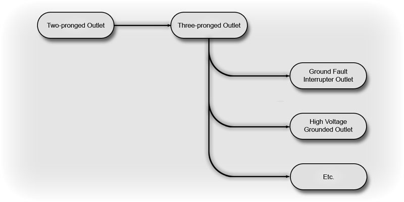
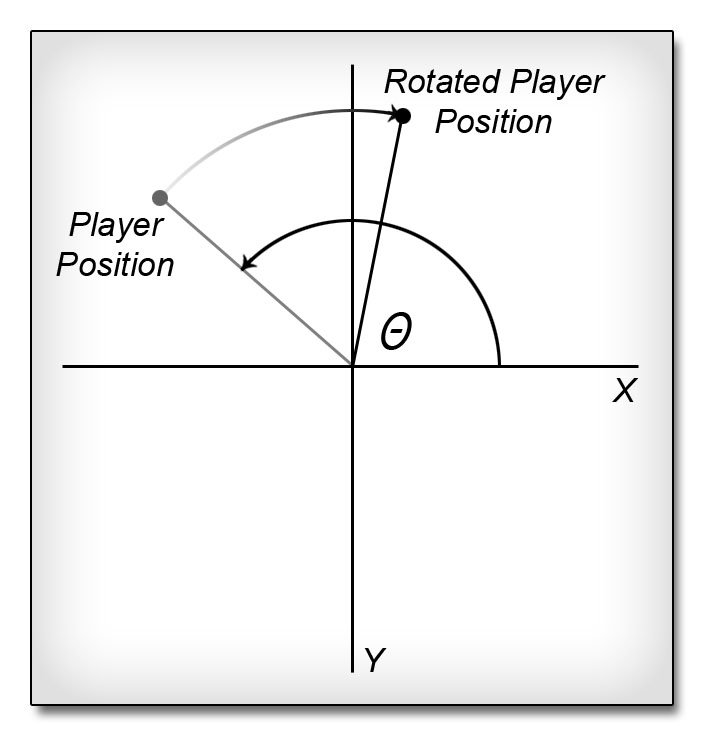
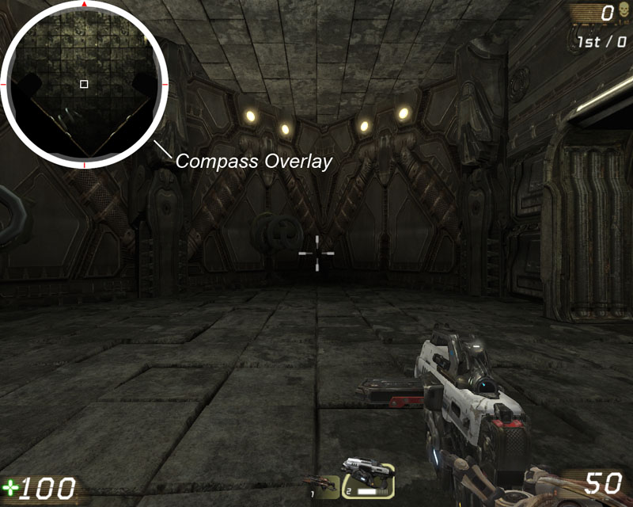
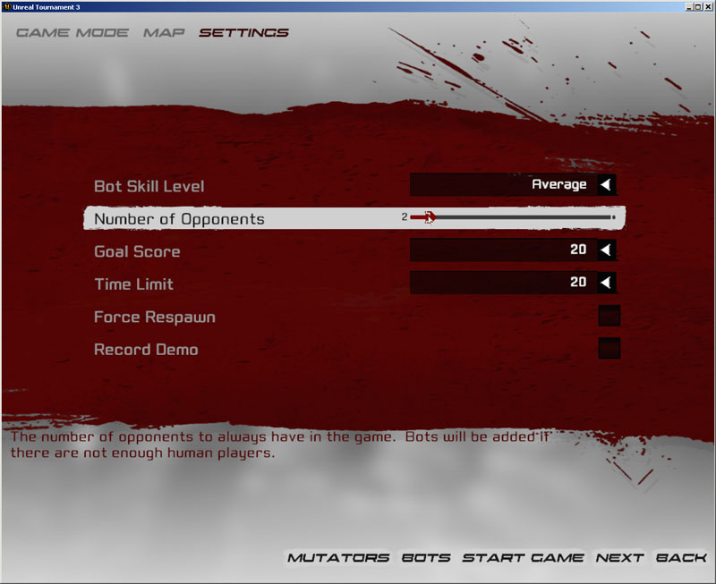

UDN
Search public documentation:
MasteringUnrealScriptInterfaces
日本語訳
中国翻译
한국어
Interested in the Unreal Engine?
Visit the Unreal Technology site.
Looking for jobs and company info?
Check out the Epic games site.
Questions about support via UDN?
Contact the UDN Staff
中国翻译
한국어
Interested in the Unreal Engine?
Visit the Unreal Technology site.
Looking for jobs and company info?
Check out the Epic games site.
Questions about support via UDN?
Contact the UDN Staff
- Chapter 13 – Interfaces
- What are interfaces?
- Examples of Interfaces
- PROGRAMMING SPECIFICS
- DEFINING INTERFACES
- INTERFACE INHERITANCE
- IMPLEMENTING INTERFACES
- WHY ARE INTERFACES USED?
- FINAL WORDS
- TUTORIAL 13.1 – THE COMPASS, PART I: ICOMPASS INTERFACE
- TUTORIAL 13.2 – THE COMPASS, PART II: COMPASS CLASS IMPEMENTATION
- TUTORIAL 13.3 – THE COMPASS, PART III: TESTING THE COMPASS, PART I
- TUTORIAL 13.4 – THE MINIMAP, PART I: THE MU_MINIMAP CLASS
- TUTORIAL 13.5 – THE MINIMAP, PART II: THE MINIMAPGAME CLASS
- TUTORIAL 13.6 – THE MINIMAP, PART III: MINIMAPHUD INITIAL SETUP
- TUTORIAL 13.7 - THE MINIMAP, PART IV: MINIMAPHUD FUNCTIONS
- TUTORIAL 13.8 – THE MINIMAP, PART V: DRAWMAP() INITIAL SETUP
- TUTORIAL 13.9 – THE MINIMAP, PART VI: PLAYERPOS AND CLAMPEDPLAYERPOS
- TUTORIAL 13.10 – THE MINIMAP, PART VII: MAP ROTATION
- TUTORIAL 13.11 – THE MINIMAP, PART VII: SET MATERIAL PARAMS AND DRAW MAP
- TUTORIAL 13.12 – THE MINIMAP, PART VIII: DRAWING OTHER PLAYERS
- TUTORIAL 13.13 – THE MINIMAP, PART IX: MAP SETUP AND SCREENSHOT
- TUTORIAL 13.14 – THE MINIMAP, PART X: MINIMAP MATERIAL AND FINISHING TOUCHES
- TUTORIAL 13.15 – THE MINIMAP, PART XI: TESTING THE MINIMAP
- TUTORIAL 13.16 – THE CAPTURE VOLUME, PART I: INITIAL SETUP
- TUTORIAL 13.17 – THE CAPTURE VOLUME, PART II: TOUCH AND TIME
- TUTORIAL 13.18 – THE CAPTURE VOLUME, PART III: THE CAPTURED STATE
- TUTORIAL 13.19 – THE CAPTURE VOLUME, PART IV: THE TIMER FUNCTION
- TUTORIAL 13.20 – THE CAPTURE VOLUME, PART V: UPDATING THE EVENTS
- TUTORIAL 13.21 – THE CAPTURE VOLUME, PART VI: TOGGLING THE VOLUME OFF & UPDATING OUR DEFAULTPROPERTIES BLOCK
- TUTORIAL 13.22 – THE CAPTURE VOLUME, PART VII: THE SEQUENCE EVENT’S INTERFACE AND IMPLEMENTATION
- TUTORIAL 13.23 – PLACING A CAPTUREVOLUME AND SEEING IT IN ACTION
- INTERFACES WITHIN UT3
- SUMMARY
- SUPPLEMENTAL FILES
Chapter 13 – Interfaces
We now have more than enough to accomplish most any task in Unreal Script. We understand the syntax, how to instantiate variables and functions. We have covered a few advanced topics, allowing us to take advantage of iterators, states and now delegates. In this chapter we are going to go a step further, opening the door to dependable programming as your project grows by introducing Interfaces. We will see their purpose, instantiation and a couple examples of how they can be used to help maintain coding standards throughout a project.What are interfaces?
Programming poses many challenges that are not entirely obvious to the lay observer. Game development, in particular, poses many such challenges and as such, it is a field that takes advantage of most every aspect of software engineering. Occasionally when working in large object oriented systems you will create a number of classes that are all used in a single way, defining a group of functions that provide the same function signature.
class MyPistol extends MyWeapon;
function bool PrimaryFire(float rate)
{
/* Pistol Stuff Here */
}
/* and so forth */
class MyRifle extends MyWeapon;
function bool PrimaryFire(float rate)
{
/* Rifle Stuff Here */
}
/* and so forth */
class MyShotgun extends MyWeapon;
function bool PrimaryFire(float rate)
{
/* Shotgun Stuff Here */
}
/* and so forth */
It is entirely possible – similar to how it is possible to swim across the English Channel or build a house entirely from toothpicks – to throw ourselves to the wind and just write the code here, but it doesn’t ensure that we implement the necessary functions properly. Nor does it provide any assurance that our functions will not change over time, so refactoring our code later may be a hassle; this is of course not to mention that it doesn’t provide a means for us to ensure that our buddies and co-developers actually follow directions.
Many object oriented languages provide a tool that will help mitigate this issue, and Unreal Script stays true to its Java and CPP roots. Interfaces are used in these types of situations, partially handing the complications of monitoring code development over to the compiler, while helping us increase the quality of our code by providing an explicit means of planning our classes according to a defined standard.
A term that will be useful in this discussion is Implement. Throughout the rest of this chapter I will use it to refer to a class or device providing some group of functionality to the user. A spoon implements the utensil interface, which is synonymous to saying that a spoon provides all of the functionality of a utensil. A spoon may implement the utensil, but that is not to say that it is not specialized in its own way, providing further functionality.
Examples of Interfaces
If you were to take a trip to your local Ikea or cutlery shop you will find extravagant views of what a fork, spoon or knife should be, and chances are they will look different than the ones here. Regardless of this possibility though, they implement the same standards as all other cutlery, when looked at on the whole. Some may even be specialized further, such as a straining spoon which is useful for vegetables, or a spork which combines the usefulness of both elements into a stubby red headed step child, also known as the “best of both worlds.”| Fork | Spoon | Knife |
|
|
|
- They are large enough to be useful, but small enough to fit in our mouths and hands
- They aren’t made out of perishable or non standard materials (no one ever heard of Styrofoam utensils)
- They are the correct length, to make sure we don’t end up biting our fingers or poking our girlfriends eyes out as we eat
- They are not bent in an unacceptably complicated manner, forcing us to contort our bodies to be able to eat
USB
Another example of an interface is something that we each use on a regular basis, and is more than likely on each of our computers. When we plug in a USB device we are taking advantage of a well defined interface, allowing us to use one port to plug in everything from a Wacom tablet, to a mouse, to a hard drive. We can reliably jam our USB dongle into our computer and within a few seconds windows will recognize – or not in some cases – our device and allow us to use it straight away. USB has not been around forever, many of the people I know remember how stressful it was to get our joysticks to work on the Commodore 64, and it had a standardized interface as well, called a serial port.Figure 13.1 – A common USB Port
COMPUTER MICE
Interfaces are all around us, allowing us to pick up a mouse and depend upon its left and right buttons working, or how it moves meeting our expectations. Mice are a great example of interfaces because they expose a second characteristic of interfaces – implementation may change. The mouse may be ball, trackball, light or laser, but regardless of the implementation we can dependably use this mouse as we have learned over the years. Moving it along our mouse pad, or spinning the trackball, sends the proper commands to our computer to move the cursor around the screen; clicking the buttons also provides the expected response from your computer.POWER OUTLETS
Two and three pronged power outlets provide an interface between electric devices, like your refrigerator or ceiling fan and the power grid provided by the city. We have multiple interfaces to deal with here, though. Three pronged interfaces allow us to take advantage of grounding, while two pronged outlets don’t. Our device, like a laptop or desktop computer, can only be plugged into a three pronged outlet, because of power requirements and surge protection. A two pronged item, like a desk fan or Cell phone adapter uses only two, but it may be plugged into either outlet because the three pronged outlet provides all of the same functionality as the two pronged outlet, it simply goes a step further, providing the ground as well. The three pronged outlet is said to Implement the two pronged interface. If we were to set up an inheritance tree for some popular outlet types it could look something like this, although this is admittedly simplified to exclude the high voltage lines that you may find your refrigerator or deep freezer plugged into. Figure 13.2 - Power Outlet Tree Diagram We can use these diagrams of this type to help orient our notes and keep a fifty-thousand foot view of our classes and how they relate. They are also fun to keep track of what we can use at which level. Looking at this diagram and knowing that I have a heavy duty hair dryer to use I can look in my bathroom and find anything that implements the three pronged outlet, while my desktop fan can be plugged into anywhere in my house.
PROGRAMMING SPECIFICS
When it comes to programming we use interfaces to define certain functions that can be depended upon by other classes. When programming, you will occasionally find yourself defining a number of functions that have the same input output and name. We call this combination a function’s signature. Working within these confines you can draft some sort of requirement and hand it to your programmers telling them what kind of functionality to provide, but Interfaces allow you to force the compiler to confirm that you have provided them. One way to look at this is to think of an example group of objects as follows:Figure 13.3 Interface Overview This hierarchy allows us to see a plan for our weapons, and we have created two interfaces, the IWeapon and the IZoomedWeapon interfaces, although the details of their contents don’t really matter at this point. We can see here that the Pistol, MachineGun and RocketLauncher implement the IWeapon Interface, while the SniperRifle implements the IZoomedWeapon Interface. When working with interfaces it is a standard practice to have interfaces use the “I” prefix to set them apart. It may be useful to look at the interfaces, like IWeapon and IZoomedWeapon, as enforcers, or explicit laws. The compiler uses interfaces as a requirements document for your code. Each interface defines necessary functions and when you implement it the compiler does the checking to ensure that you have implemented them. Looking into IWeapon we could see something like the following, in pseudo-code: All weapons will implement a Primary Fire, accepting the rate that it fires, and Secondary Fire method which accepts the number of the rounds it should fire. Both will return false if the execution was successful. To ensure data integrity we will define two constants that will be free to be used throughout the implementations. The Maximum Firing Rate and the Minimum firing Counter. When you attempt to compile the above classes the compiler will check the pistol, machinegun, and any other class implementing the IWeapon interface, to see that they are implementing the necessary functions. Depending on the language, not implementing a function defined in an interface will more than likely result in an error, or some scary looking output at compile time.
DEFINING INTERFACES
Unreal uses the Interface keyword to denote an interface, which is different from a class, as we discussed earlier, because of the function signature. In Unreal Script we are free to define any number of functions, or data types as we see fit. This includes functions, structures, enumerations, or anything further that does not actually instantiate memory. You can use this fact to centralize these declarations and minimize the code duplication problems that you may run into. In Unreal Script, Interfaces are defined in a simple fashion, following the standard set by the classes. Below is the IWeapon interface that we just went through, declared in Unreal Script, instead of pseudo-code.Interface IWeapon; /* Define our constants */ const MaximumFiringRate = 0.05; // 60/1200 const MinimumFiringCounter = 3; /* All following function declarations */ function bool PrimaryFire(float Rate); function bool SecondaryFire(int Counter);
DECLARATION V. DEFINITION
Everything from the return type to the input value must match these function signatures for it to be compiled by Unreal 3. This highlights another important aspect of programming in this environment, the differentiation between Declaration and Definition.- The interface declares functions, supplying the necessary elements like return type and input arguments.
- When you implement the interface in a class you will be able to define the actual details of the function, like how it works or what it does.
INTERFACE INHERITANCE
Similar to our discussion about power adapters, you can build interfaces off of each other. This is accomplished in the same way as classes are extended, using the Extends keyword.Interface IZoomedWeapon extends IWeapon; function bool ZoomedFire(float Rate, int FOV);It is certainly the case that we can build complicated hierarchical inheritance trees for interfaces, but you should do what you can to stay away from them. Just as with your classes you should create interfaces only when needed, and define them explicitly. Defining interfaces to be nebulous or include frivolous declarations will lead to complicated classes with empty functions. Using interfaces is exceptionally beneficial when you plan ahead. I would strongly recommend a class in object oriented analysis and design or a book on UML if you are turned on by this type of discussion.
IMPLEMENTING INTERFACES
Implementing an Interface in a class is really quite straight forward in Unreal Script, similar in fashion to what we are used to with the class derivation. Interfaces will more than likely be stand alone, however. Let’s look at two examples to drive this home. The pistol class implements the IWeapon interface, and its class will look something like the following in UScript:
Class Pistol extends UTWeapon implements(IWeapon);
function bool PrimaryFire(float Rate)
{
if (Rate > class'IWeapon'.const.MaximumFiringRate)
return true;
/* Do mumbo jumbo here */
return false;
}
function bool SecondaryFire(int Counter)
{
if (Counter < class'IWeapon'.const.MinimumFiringCounter)
return true;
/* Do jumbo mumbo here */
return false;
}
As you can see this implements the necessary functions, declared in the interface, and when you compile it you will get no errors. You will certainly see a peculiar line…
if (Rate > class'IWeapon'.const.MaximumFiringRate)This line is an example of how you gain access to a constant within an interface. As a rule, treat interfaces as though they are classes and you can gain access to their defined elements in the same fashion. (This is discussed in the third chapter) Just for examples sake, if you were to compile with the interface implemented incorrectly you will see an error like the following:
Error, Implementation of function 'SecondaryFire' conflicts with interface 'IWeapon' - parameter 0 'Counter' Compile aborted due to errors.Let’s look at our sniper rifle.
Class SniperRifle extends UTWeapon implements(IZoomedWeapon);
function bool PrimaryFire(float Rate)
{
if (Rate > class'IWeapon'.const.MaximumFiringRate)
Rate = class'IWeapon'.const.MaximumFiringRate;
/* Do mumbo jumbo here */
return false;
}
function bool SecondaryFire(int Counter)
{
if (Counter < class'IWeapon'.const.MinimumFiringCounter)
Counter = class'IWeapon'.const.MinimumFiringCounter;
/* Do jumbo mumbo here */
return false;
}
function bool ZoomedFire(float Rate, int FOV)
{
/* boom headshot! */
return false;
}
As you can see here this class implements IZoomedWeapon, which in turn extends the IWeapon interface. The compiler expects both interfaces to be implemented, and as a rule it will check every interface above the current one to ensure that all of their functions are defined as well. This is another reason to keep the interface tree short – think bush or shrub.
Also note that neither of our classes has had to define the constants.
When you first begin working with interfaces you will undoubtedly have a tough time and may wind up being overwhelmed. It may be useful to create Interface index cards to keep track of your interfaces.
| IWeapon | |
Functions
|
Constants
|
| IZoomedWeapon extends IWeapon | |
Functions
|
Constants
|
- Interfaces allow us to declare functions that must be implemented within our classes
- They provide us with a means to impose requirements upon our functions declarations
- They make no requirement on the implementation other than the function signature, also known as declaration
- Instead their focus is on how the functions will be used
- Implementation may vary from between classes; definition may be different
- If a function is implemented in a parent class it will satisfy the interfaces requirements
- UT3 provides us a means to define Enumerations, Structures, and Constants, but nothing that actually requires memory
- Implementing multiple interfaces is possible, but should be used only in select circumstances
- Implementing two interfaces of the same hierarchy will cause issues within your code and should be avoided like the plague
WHY ARE INTERFACES USED?
As we have already discussed, interfaces provide a mechanic to the compiler to ensure our classes conform to some specifications. Epic distributes quite a few interfaces, including but not limited to the UI elements, many of the elements for online gameplay, and some data-store craziness. If you look closely you will find each interface is implemented as we have seen already in our examples, and a second method, similar to what we experienced in the classes, as variable types. A prime example of this is in the OnlineSubsystem:/** The interface to use for creating and/or enumerating account information */ var OnlineAccountInterface AccountInterface; /** The interface for accessing online player methods */ var OnlinePlayerInterface PlayerInterface; /** The interface for accessing online player extension methods */ var OnlinePlayerInterfaceEx PlayerInterfaceEx; /** The interface for accessing system wide network functions */ var OnlineSystemInterface SystemInterface; /** The interface to use for creating, searching for, or destroying online games */ var OnlineGameInterface GameInterface; /** The interface to use for online content */ var OnlineContentInterface ContentInterface; /** The interface to use for voice communication */ var OnlineVoiceInterface VoiceInterface; /** The interface to use for stats read/write operations */ var OnlineStatsInterface StatsInterface; /** The interface to use for reading game specific news announcements */ var OnlineNewsInterface NewsInterface;This reinforces what we have already learned about interfaces, but it may not be entirely obvious. Lets take a look back at our weapons that we defined earlier. We had defined our interface and said that they were there so they could be used by other classes dependably. Our user could have a function as we have here:
Function bool foo (IWeapon w)
{
w.PrimaryFire(60/1200);
/* any other things it wants to do */
}
In similar fashion to what we experienced earlier declaring variable types in our classes, function parameters and structures. The upside, or downside depending on how you look at it, is that you have a variable that is already cast to that type when you are about to use it. This is used throughout the default codebase and as such it is quite common place for reference material.
| Base Types | Classes | Constants |
|
|
|
FINAL WORDS
When to subclass and when to create in interface is a question many people like to ask, and it’s not a bad question. When you get yourself going you will find that interfacing creates similar results to sub classing, with one difference – sub classing doesn’t stop you from changing the signature of a function, which is one prime example of when to use an interface. Some projects require a defined interface before a class is defined, as we discussed previously. Throwing ourselves to the wind is a way of saying let chance control our destiny. A simple typo may lead to hours of debugging, while an interface will give you a direct line of where your function is not declared correctly.TUTORIAL 13.1 – THE COMPASS, PART I: ICOMPASS INTERFACE
We should now take a few minutes and implement an interface of some sort, just to drive home our discussion up to this point. Let’s aim a little low for this first one, focusing on the details, and later we will do something more interesting. Our mapper and HUD coder have come to us, looking for a new element to be defined, a compass. The purpose of this element is to be placed into our level and provide the mappers fine tuned control over the direction of north, from that the HUD coder has some needs, with which we are going to be defining our Interface and later the actual Compass class. The Compass needs:| Mapper | Coder |
|
|
interface ICompass;2. Declare the GetRadianHeading() function, returning the unwound heading of the object.
function float GetRadianHeading();3. Declare the GetDegreeHeading() Function, returning the converted radian value into degrees.
function float GetDegreeHeading();4. Declare the GetYaw() function, returning the Yaw of our objects Rotation.
function int GetYaw();5. Declare the GetRotator function, returning the entire rotator object.
function Rotator GetRotator();6. Declare the GetVectorizedRotator() function, returning the rotator, converted to a vector.
function vector GetVectorizedRotator();
TUTORIAL 13.2 – THE COMPASS, PART II: COMPASS CLASS IMPEMENTATION
We can take this interface and build out a compass in a straightforward fashion, but we should do some research to make sure we do not end up reinventing the wheel. The only element that may be useful to avoid writing on our own is probably the rotator, which is seemingly in every element. It also provides the interface that our mapper is accustomed to, with the rotation tool. The Object class has a lot of cool functions and elements, which will most likely be useful, but the actor class actually implements the rotator that we are looking for, and it comes with the location vector as well, so life is great!var(Movement) const vector Location; // Actor's location; use Move to set. var(Movement) const rotator Rotation; // Rotation.We can start coding out our class at this point, knowing that we intend to implement the interface and derive from this class. 1. Define our class, extending the actor class and placeable, implementing our ICompass interface.
class Compass extends actor placeable implements(ICompass);2. Define the Rotator retrieval functions. Because of where we chose to derive, the rotator is already available to us. We can quickly take care of three of the function definitions.
// Return the yaw of the actor
function int GetYaw()
{
return Rotation.Yaw;
}
function Rotator GetRotator()
{
return Rotation;
}
function vector GetVectorizedRotator()
{
return vector(Rotation);
}
We only care about the Yaw and then providing raw access to our developers.
3. The Yaw is actually not exactly in the format that we need for the HUD to be useful, but it works fine for our mapper. We will need to do some manipulation of the rotator, ensuring the heading is accurate for the UI work. Let us take a couple minutes to break this apart. First declare the GetRadianHeading() function.
function float GetRadianHeading()
{
}
a. Three local variables are needed.
This is an algorithm that is used with the vehicles, save the radian conversion, and can be seen within UTVehicle.uc on line 1199.
4. Convert the Radian measurement to degrees. We can now use the radian measurement that we just calculated to be able to get the radian measurements. There is a constant variable that is quite useful RadToDeg which is 180/PI, pre-calculated for us.
local Vector v; local Rotator r; local float f;b. Get the Yaw component. Note that we are copying it into a new rotator object’s yaw value. This is the first step in simplifying our rotator.
r.Yaw = GetYaw();c. Convert our rotator to a Vector, which make the angle manipulations easier to handle.
v = vector(r);d. Unwind the Heading using a function that epic has provided to us. Many functions like it will prove to be very useful if you get deep into the mathematical end of programming within Unreal.
f = GetHeadingAngle(v);e. Unwind that heading, using another of the built in functions. This actually returns a radian value, but it may be negative.
f = UnwindHeading(f);f. Lets convert the value to positive by adding 2Pi
while (f < 0) f += PI * 2.0f;g. And finally, return that value.
return f;
function float GetDegreeHeading()
{
local float f;
f = GetRadianHeading();
f *= RadToDeg;
return f;
}
5. We are now done with the heavy lifting. The only things left to do are UI related. Before we leave, though, it would be helpful to be able to have some debug info output when we are working on our map later. A function that is very useful for debugging as the level is loading is PostBeginPlay. We can output the heading to our log file when the game begins.
event PostBeginPlay()
{
`log("===================================",,'UTBook');
`log("Compass Heading"@GetRadianHeading()@GetDegreeHeading(),,'UTBook');
`log("===================================",,'UTBook');
}
6. We have the functions all setup, but we now need to hook up a couple visual items for our mapper. Specifically an icon and the arrow need to be drawn on our object. We can also take this moment to change a couple entries to ensure our element holds its proper values and doesn’t get removed or changed when the map is reset.
DefaultProperties
{
}
a. Define a new ArrowComponent element, named arrow. This will be the actual arrow our mappers will be shown to reflect the actual direction that the object is pointing.
7. There are still a couple final elements that should be toggled for good housekeeping, lets cover those before we complete this task.
Begin Object Class=ArrowComponent Name=Arrowb. The Arrow Color is the 0-255 range, which you may be familiar with, from your experience with Photoshop or Web development. You can tweak this as you wish. There is a color chooser within UnrealEditor that is very nicely done, but you can also play with the integer values.
ArrowColor = (B=80,G=80,R=200,A=255)c. This is the scale of the Arrow, not the weight. You will see its length or size increase as you scale this value up.
ArrowSize = 1.000000d. Provide it with a nice and friendly name to help minimize complications.
Name = "North Heading"e. Now close it out, and add it to the components array. You will see this pattern throughout the map components in Unreal Script. End Object
Components(0) = Arrowf. For instance, the Sprite component. This one is going to be slightly easier to implement, but it requires that we know the package, group and/or name of the texture we want to display. Begin as we did previously, defining the new component object for our Sprite.
Begin Object Class=SpriteComponent Name=Spriteg. We are going to plug in the new texture we want to have hooked to our element. As with all 2d sprites in the editor, it will always face the developer and should be as minimally intrusive as possible. As discussed earlier, our Sprite has been defined for us already – ‘UTBookTextures.compass’.
Sprite=Texture2D' CompassContent.compass'h. Now we will take a moment to set a couple boolean values, making it hidden in game and avoid loading it into the actual game when playing.
HiddenGame = True AlwaysLoadOnClient = False AlwaysLoadOnServer = Falsei. And finally close it out and add it to the Components array. This element you pass in is the Name=Sprite entry.
End Object Components(1) = Sprite
a. bStatic is a Boolean that controls whether the Mappers have the ability to change anything about this actor during game play. The compass should stick to pointing north, so it should be static.
You can find more information on the components by looking at the dozens of derivative classes under Component. Suffice to say that these two are to hook up a sprite and an arrow component on our object, based at its origin.
bStatic = Trueb. bHidden controls the visibility of the primitive components of this actor. You can think of this as a failsafe to the boolean values we changed on the Sprite component.
bHidden = Truec. bNoDelete controls the ability for this actor to be deleted during gameplay. It would be quite confusing for the compass to wink out of existence, so we clearly want this property set to True.
bNoDelete = Trued. bMovable is tied into the movement of the actor. Another failsafe within the actor class.
bMovable = False
TUTORIAL 13.3 – THE COMPASS, PART III: TESTING THE COMPASS, PART I
All of the coding is now behind us, at least for the compass element. We should now build the code and open up the editor to check that we did everything properly, place it into a map and then load it up into UT3 to test that the element is working. 1. Go ahead and load up the editor. You should create a new (or open up an existing if you are so inclined) map and set it up to have the necessary elements. 2. Open up the Actor Classes browser. This is within the Generic Browser, under Actor Classes and contains the class hierarchy within Unreal Script. 3. The script package should already be loaded since it is in the ModPackages list in the UTEditor.ini file, but if it is not for some reason, go to File > Open then navigate to your Unpublished\CookedPC\Scripts directory, where your compiled .u file resides.Figure 13.4 - File Dialog Looking for MasteringUnrealScript.u 4. Once it has loaded it should show the compass element in the class tree, under Actor, as seen in Figure 13.5. Select it and go over to your map. You should now be able to right click and an “Add Compass Here” menu option provided to you.
Figure 13.5 - Actor Class Browser with our Compass 5. Selecting this element will create an element like the one in Figure 13.6. You can make sure it works properly by selecting it in the editor and switching to the rotation tool and see the arrow rotate.
Figure 13.6 - Our Compass Object in a map 6. If you load up your level now you should see something like the following in your log file, showing that it is indeed working.
Figure 13.7 - Excerpt of the games log file. As we can see here, our compass is reporting the appropriate values, in both radian and degree format, so our developers can do what they need to do. This is a prime example of where planning and interfaces come together. Just to recap, our process was as follows:
- See what the needs of the class will be
- Define the interface as per the specifications
- Define the functions for our class, implementing the interface as a failsafe
- Attach the necessary components
- Test
TUTORIAL 13.4 – THE MINIMAP, PART I: THE MU_MINIMAP CLASS
Minimaps should be fairly familiar to anyone who has played any of the open sandbox –style games that have been released recently. Essentially, this is a map displayed on the screen at all times that shows a portion of the world surrounding the player. As the player moves or turns, the map moves or rotates with them. The minimap we will create will consist of two parts: the map and a compass overlay In order to create a working minimap system, we will need three things: a subclass of the Compass class to place in the map and hold some data specific to the map in question, a new heads up display (HUD) class that will handle drawing the map to the screen, and a new gametype to force the new HUD class to be used. The HUD class will extend the basic UTHUD class and simply add the necessary functionality to draw the minimap. The gametype class will be a very simple extension of the UTDeathMatch gametype which overrides the type of HUD used and does a small amount of setup related to the minimap system. To begin with, in this tutorial we will declare the MU_Minimap class which is a subclass of the Compass class. 1. Open ConTEXT and create a new file named MU_Minimap.uc using the UnrealScript highlighter. 2. Declare the new MU_Minimap class extending from the Compass class.class MU_Minimap extends Compass;3. This class needs several editable variables declared. First, a MaterialInstanceConstant to hold a reference to the material to be used for the map itself. We will take a look at the material setup later once we have all the coding out of the way and we are ready to set up the MU_Minimap actor within our map.
var() MaterialInstanceConstant Minimap;
Figure 13.8 - An example minimap texture. 4. Another MIC variable referencing the material for the compass overlay is also needed.
var() MaterialInstanceConstant CompassOverlay;
Figure 13.9 – An example of a compass overlay texture. 5. A sphere component is added to the class and is made editable in order to make setting up the level and getting the map screenshot just right. The idea is that the location of this actor will represent the center of the map and the radius of the sphere will represent the extent in each direction covered by the map.
var() Const EditConst DrawSphereComponent MapExtentsComponent;6. A Bool variable named bForwardAlwaysUp will allow the designer to specify whether the player’s forward movement should always be displayed as upward movement on the screen or at offset from straight up by the North direction angle as determined by the rotation of the MU_Minimap actor. The odds are good this will always be set to True as it makes the most sense, but we will leave the option.
var() Bool bForwardAlwaysUp;

Figure 13.10 – The arrow shows the direction of forward movement. On the left with bForwardAlwaysUp set to False, and on the right with it set to True. 7. In order to track the player’s position in the map and convert it to a position in the map texture, we need to know the range of world space coordinates in the X- and Y-axes that is covered by the map texture. Two Vector2D variables will hold these values.
var Vector2D MapRangeMin; var Vector2D MapRangeMax;8. Another Vector2D variable will hold the X and Y world space coordinates corresponding to the center of the map texture.
var Vector2D MapCenter;9. The values of the MapCenter variable will be assigned in the PostBeginPlay() function. Override this function and assign the values to this variable, making sure to call the parent class’s PostBeginPlay() function as well.
function PostBeginPlay()
{
Super.PostBeginPlay();
MapCenter.X = MapRangeMin.X + ((MapRangeMax.X - MapRangeMin.X) / 2);
MapCenter.Y = MapRangeMin.Y + ((MapRangeMax.Y - MapRangeMin.Y) / 2);
}
10. Next, still in the PostBeginPlay() function, calculate the extents in each axis of the map by starting with the MapCenter and adding or subtracting the SphereRadius of the MapExtentsComponent.
MapRangeMin.X = MapCenter.X - MapExtentsComponent.SphereRadius; MapRangeMax.X = MapCenter.X + MapExtentsComponent.SphereRadius; MapRangeMin.Y = MapCenter.Y - MapExtentsComponent.SphereRadius; MapRangeMax.Y = MapCenter.Y + MapExtentsComponent.SphereRadius;11. Finally, create the DrawSphereComponent with e default radius of 1024.0 and using the color green. Also, set the value of bForwardAlwaysUp to True in the default properties as this is the most likely the desired functionality.
defaultproperties
{
Begin Object Class=DrawSphereComponent Name=DrawSphere0
SphereColor=(R=0,G=255,B=0,A=255)
SphereRadius=1024.000000
End Object
MapExtentsComponent=DrawSphere0
Components.Add(DrawSphere0)
bForwardAlwaysUp=True
}
12. Save the script to preserve your progress.
TUTORIAL 13.5 – THE MINIMAP, PART II: THE MINIMAPGAME CLASS
This tutorial focuses on the creation of the new Minimap gametype class. Its purpose is simply to hold a reference to the MU_Minimap actor placed within the map and tell the game to use the new HUD class we will create in subsequent tutorials. 1. Open ConTEXT and create a new file named MinimapGame.uc using the UnrealScript highlighter. 2. Declare the new MInimapGame class extending from the UTDeathMatch class.class MinimapGame extends UTDeathMatch;3. This class has one variable to declare, a MU_Minimap object reference named GameMInimap.
var MU_Minimap GameMinimap;4. When the game initializes, we must populate this variable with a reference to the MU_Minimap actor placed within the map. Override the InitGame() function making sure to call the parent class’s version of the function.
function InitGame( string Options, out string ErrorMessage )
{
Super.InitGame(Options,ErrorMessage);
}
5. Inside the InitGame() function, a local MU_Minimap variable is needed.
local MU_Minimap ThisMinimap;6. An AllActors iterator is used to find the MU_Minimap actor within the level and assign it to the GameMinimap variable.
foreach AllActors(class'MasteringUnrealScript.MU_Minimap',ThisMinimap)
{
GameMinimap = ThisMinimap;
break;
}
7. In the default properties, the HUDType variable of the gametype is overridden to force the HUD class we will create to be used.
HUDType=Class'MasteringUnrealScript.MinimapHUD'8. Also, the the MapPrefixes(0) variable is overridden to determine what maps are associated with this gametype.
MapPrefixes(0)="COM"9. Save the script to preserve your work.
TUTORIAL 13.6 – THE MINIMAP, PART III: MINIMAPHUD INITIAL SETUP
With the minimap actor and gametype classes out of the way, we turn our attention to the HUD class. In this tutorial, we will focus on declaring the class and its variables as well as setting some default properties for those variables. 1. Open ConTEXT and create a new file named MinimapHUD.uc using the UnrealScript highlighter. 2. Declare the MinimapHUD class extending from the UTHUD class.class MinimapHUD extends UTHUD;3. This class will also hold its own reference to the minimap actor in the level.
var MU_Minimap GameMinimap;4. A Float variable named TileSize will hold a value specifying the amount of the full map that will be displayed at any time. So if the full map texture is 2048x2048, and this value is 0.25, then the portion of the map texture that would be displayed would be 512x512.
var Float TileSize;
Figure 13.11 – The portion of the map drawn using TileSize values of 0.25 and 0.5. 5. An Int variable named MapDim represents the dimensions of the map as drawn on the screen at the default resolution of 1024x768.
var Int MapDim;
Figure 13.12 – MapDim specifies the dimensions of the map as drawn on screen. 6. Another Int variable specifies the size of the box representing the players on the map at the default resolution of 1024x768.
var Int BoxSize;
Figure 13.13 – BoxSize specifies the dimensions of the player box as drawn on screen. 7. The last variable is an array of two colors which are used to draw the players on the map. One of the colors is for the owner of the HUD and the other color is for all the other players in themap.
var Color PlayerColors[2];8. The default properties block should be fairly straightforward.
defaultproperties
{
MapDim=256
BoxSize=12
PlayerColors(0)=(R=255,G=255,B=255,A=255)
PlayerColors(1)=(R=96,G=255,B=96,A=255)
TileSize=0.4
MapPosition=(X=0.000000,Y=0.000000)
}
9. Save the script to preserve your progress.
TUTORIAL 13.7 - THE MINIMAP, PART IV: MINIMAPHUD FUNCTIONS
Before we move on to implementing the functionality for drawing the map, the PostBeginPlay() and DrawHUD() functions need to be overridden in the MinimapHUD class and a new function named GetPlayerHeading() is added. 1. Open ConTEXT and the MinimapHUD.uc file. 2. First, the PostBeginPlay() function is overridden and used to assign the gametype’s reference to the minimap actor in the map to the GameMInimap variable in this class.
simulated function PostBeginPlay()
{
Super.PostBeginPlay();
GameMinimap = MinimapGame(WorldInfo.Game).GameMinimap;
}
3. Next, the DrawHUD() function is overridden and a call to the function which will be responsible for drawing the map, the DrawMap() function, is added. This will essentially force the map to be drawn at all times whether the player is alive or dead an whether the game is still going or has ended.
function DrawHUD()
{
Super.DrawHUD();
DrawMap();
}
4. The GetPlayerHeading() function is very much like the GetRadianHeading() function found in the Compass class created previously. Copy this function from the Compass class and paste it into the MinimapHUD class now. The code below should now be in the MinimapHUD class.
function float GetRadianHeading()
{
local Vector v;
local Rotator r;
local float f;
r.Yaw = GetYaw();
v = vector(r);
f = GetHeadingAngle(v);
f = UnwindHeading(f);
while (f < 0)
f += PI * 2.0f;
return f;
}
5. Change the name of the function to GetPlayerHeading()
function float GetPlayerHeading()
{
local Vector v;
local Rotator r;
local float f;
r.Yaw = GetYaw();
v = vector(r);
f = GetHeadingAngle(v);
f = UnwindHeading(f);
while (f < 0)
f += PI * 2.0f;
return f;
}
6. Next, change the line that reads:
r.Yaw = GetYaw();To read:
r.Yaw = PlayerOwner.Pawn.Rotation.Yaw;7. Save the script to preserve your work.
TUTORIAL 13.8 – THE MINIMAP, PART V: DRAWMAP() INITIAL SETUP
The DrawMap() function is responsible for performing all the remaining necessary calculations and drawing the map to the screen. In this tutorial, the function and all local variables will be declared. 1. Open ConTEXT and the MinimapHUD.uc script. 2. Declare the DrawMap function.
function DrawMap()
{
}
3. Two local Floats will hold the headings for the direction of North as specified by the minimap actor in the map and for the direction the player is currently facing.
local Float TrueNorth; local Float PlayerHeading;4. Declare local Float variables for the rotation of the map and the rotation of the compass overlay
local Float MapRotation; local Float CompassRotation;5. Several local Vector variables are declared. Their uses will be explained in detail later.
local Vector PlayerPos; local Vector ClampedPlayerPos; local Vector RotPlayerPos; local Vector DisplayPlayerPos; local vector StartPos;6. The minimap material uses a transparency mask to force the map to display in a circular shape. In order to move this mask to the proper location, the R and G components of a Vector Parameter are added to the texture coordinates to offset the position of the mask texture. A LinearColor local variable is needed to pass the appropriate value to the Vector Parameter in the material.
local LinearColor MapOffset;7. A local Float variable holds the distance in world space coordinates covered by the map. For simplicity, we are requiring that a square map texture be used and thus only one range is needed.
local Float ActualMapRange;8. Finally, a local Controller variable is used with an iterator to draw the positions of all the players within the map.
local Controller C;9. Before moving on, the location the map will be drawn to on the screen as well as the size of the adjusted size of the map and player boxes can be set. The MapPosition variable of the class holds relative position values. Multiplying these by the width and height of the viewport will result in the absolute position at which to draw the map. The current width and height of the viewport are provided in the form of the FullWidth and FullHeight variables.
MapPosition.X = default.MapPosition.X * FullWidth; MapPosition.Y = default.MapPosition.Y * FullHeight;10. The size of the map and player boxes is calculated each frame by multiplying the default values of these variables by the scaling factor for the viewport at its current resolution. This scaling factor is held in the ResolutionScale variable.
MapDim = default.MapDim * ResolutionScale; BoxSize = default.BoxSize * ResolutionScale;11. Save the script to preserve your progress.
TUTORIAL 13.9 – THE MINIMAP, PART VI: PLAYERPOS AND CLAMPEDPLAYERPOS
The PlayerPos and ClampedPlayerPos variables hold the player’s current location as a normalized offset from the center of the map. If you consider the length of the full map being 1.0 in each direction, each component of these variables can have a value between -0.5 and 0.5 since they represent offsets from the center. You may be wondering why use an offset from the center of the map. The reason is because the map will be rotated around its center inside of the material and we need to know the position relative to that in order to calculate everything correctly as you will see later on. Of course, before we can calculate normalized values, we must know the length the map covers in world space coordinate values. This is where we begin in this tutorial. 1. Open ConTEXT and the MinimapHUD.uc script. 2. The ActualMapRange is calculated by taking the larger of the two ranges between the X-axis and the Y-axis, though they should be equal. This merely a failsafe. The range of each axis is calculated by taking the difference between the values set in the MapRandMin and MapRangeMax elements of the GameMinimap.
ActualMapRange = FMax(GameMinimap.MapRangeMax.X - GameMinimap.MapRangeMin.X,
GameMinimap.MapRangeMax.Y - GameMinimap.MapRangeMin.Y);
3. This next part is tricky because when taking the screenshot of the level to use as the map, you must use the Top viewport inside of UnrealEd since this gives you no perspective distortion. However, the axes as displayed in that viewport have X in the vertical direction and Y in the horizontal direction. As far as the HUD and Canvas are concerned, the horizontal direction of the viewport is X and the vertical direction is Y. To complicate matters even more, the X-axis inside of UnrealEd as seen from the Top viewport increases as it moves from bottom to top, while the game’s viewport increases as it moves from top to bottom.
It boils down to the axes must be swapped and when dealing with the X-axis world coordinates, the values must be the opposite sign. This will align the world space coordinates as they would be in the Top viewport in UnrealEd with the way they are handled with respect to the HUD.
Let’s start with the X component of the PlayerPos. To get the normalized offset from the center, the map’s center must be subtracted from the location of the player. Then that value must be divided by the range we just calculated. Remember that the X component of a position in the HUD corresponds to the Y component of world space locations.
PlayerPos.X = (PlayerOwner.Pawn.Location.Y – GameMinimap.MapCenter.Y) / ActualMapRange;4. The Y component of the PlayerPos corresponds to the X component of the world space location, but must be multiplied by -1 in order to get the opposite value. The easiest way to achieve this is simply to swap the order of the subtraction.
PlayerPos.Y = (GameMinimap.MapCenter.X - PlayerOwner.Pawn.Location.X) / ActualMapRange;5. So that gives us the player’s position on the map, but what happens when the player is very close to one of the edges? Since the minimap is designed to show the player’s location in the center with the map all around it, we run the risk of the map texture tiling if we allow the player to get close to the edge while still displaying the player in the center of the minimap. To account for this, we will use the ClampedPlayerPos variable to hold a second location which is limited to always be just far enough from the edge to never allow any tiling.
Figure 13.14 – The map drawn without clamping on the left, and with clamping on the right. To do this, the FClamp() function is used. By passing the value to be clamped along with the two limits to clamp it within, we can assure that the positions will always be within a safe range. The two limits will be:
-0.5 + (TileSize / 2.0)and
0.5 - (TileSize / 2.0)We’ve already mentioned the normalized offset values are between -0.5 and 0.5. Adding or subtracting half the portion of the map being displayed from these will make sure the portion never overlaps causing tiling of the map texture. Clamp the X component of the player’s position now.
ClampedPlayerPos.X = FClamp( PlayerPos.X,
-0.5 + (TileSize / 2.0),
0.5 - (TileSize / 2.0));
6. Now do the same for the Y component.
ClampedPlayerPos.Y = FClamp( PlayerPos.Y,
-0.5 + (TileSize / 2.0),
0.5 - (TileSize / 2.0));
7. Save the script to preserve your work.
TUTORIAL 13.10 – THE MINIMAP, PART VII: MAP ROTATION
Now the fun begins as the map must be rotated to account for the direction the player is facing. Rotating the map itself is actually extremely easy; we just pass a radian value to a Scalar Parameter within the material the drives a Rotator expression. Making this even easier, the Rotator within the material will rotate the opposite direction of the rotation calculated by the GetPlayerHeading() or GetRadianHeading() functions which is ideal since the map should rotate the opposite direction that the player is turning. The real fun part is calculating the rotated position of the player within the map. We know the player’s position relative to the center of the texture, but the moment that texture gets rotated, the position we just calculated no longer corresponds to the spot on the map where the player should be displayed. With a little trigonometry, though, we can calculate the rotated position. First, we need to know how much to rotate everything. 1. Open ConTEXT and the MinimapHUD.uc script. 2. The TrueNorth and PlayerHeading variables need to be populated with the appropriate radian values.TrueNorth = GameMinimap.GetRadianHeading(); Playerheading = GetPlayerHeading();3. Now, we can use those values to set the MapRotation, CompassRotation, and InverseRotation values, but how we do that is dependent on the value of the bForwardAlwaysUp variable of the GameMInimap minimap actor. Create an If-statement with this variable’s value as the condition.
if(GameMinimap.bForwardAlwaysUp)
{
}
else
{
}
4. If bForwardAlwaysUp is True, the map is rotated based solely on the PlayerHeading and the CompassRotation is the difference between the Playerheading and TrueNorth.
MapRotation = PlayerHeading; CompassRotation = PlayerHeading - TrueNorth;5. If bForwardAlwaysUp is False, the map is rotated based on the difference between the PlayerHeading and TrueNorth and the CompassRotation is the same as the MapRotation.
MapRotation = PlayerHeading - TrueNorth; CompassRotation = MapRotation;6. The basic idea when rotating a point around another point is to use the parametric equation of a circle: The radius in this case, would be the distance from the center of the map to the player’s position, or the length of the PlayerPos vector.
VSize(PlayerPos)The angle of rotation requires a little more complexity to decipher. The angle of rotation is the angle between the positive X-axis, or 0 radians, and the vector from the center of the map to the position the player would be after being rotated.
Figure 13.15 – The angle needed to calculate the rotated player’s position. You may be thinking to yourself, “The whole point of this is to calculate the position of the player after being rotated. How do we find that angle if we don’t know the position?” We do know the player’s actual location and we can find the angle between the positive X-axis and the vector from the center of the map to that location. This is done by passing the Y and X components of the player’s position to the Atan() function which calculates the arctangent given the lengths of the opposite and adjacent sides of a triangle. For example:
Atan(PlayerPos.Y, PlayerPos.X)
Figure 13.16 – The angle to the player’s actual position. And we know the amount that position is to be rotated. By subtracting the MapRotation from the angle between the positive X-axis and the player’s position, we can calculate the angle between the positive X-axis and the rotated position. So the actual value of in the equations above is:
Atan(PlayerPos.Y, PlayerPos.X) – MapRotation
Figure 13.17 – Subtracting the angle rotation leaves the desired angle. Putting it all together, the rotated player position is calculated as:
DisplayPlayerPos.X = VSize(PlayerPos) * Cos( ATan(PlayerPos.Y, PlayerPos.X) - MapRotation); DisplayPlayerPos.Y = VSize(PlayerPos) * Sin( ATan(PlayerPos.Y, PlayerPos.X) - MapRotation);7. Notice we have set the DisplayPlayerPos by rotating the PlayerPos. We also need to set the RotPlayerPos by rotating the ClampedPlayerPos in the same manner.
RotPlayerPos.X = VSize(ClampedPlayerPos) * Cos( ATan(ClampedPlayerPos.Y, ClampedPlayerPos.X) - MapRotation); RotPlayerPos.Y = VSize(ClampedPlayerPos) * Sin( ATan(ClampedPlayerPos.Y, ClampedPlayerPos.X) - MapRotation);8. The DisplayPlayerPos is the actual position of the player on the rotated map and is used to draw the player box. The RotPlayerPos is the position on the map that represents the center of the displayed portion of the map. This is the position that is used to find the StartPos, or the top left corner of the portion of the map to be displayed. This is calculated by adding 0.5 to both the X and Y components since they are offsets from the center and we need absolute values now. Then, half the TileSize is subtracted from each. The result is then clamped between 0.0 and 1.0 minus the TileSize just as one last precaution to make sure no tiling occurs, though this value should already fall within these limits.
StartPos.X = FClamp(RotPlayerPos.X + (0.5 - (TileSize / 2.0)),0.0,1.0 - TileSize); StartPos.Y = FClamp(RotPlayerPos.Y + (0.5 - (TileSize / 2.0)),0.0,1.0 - TileSize);
Figure 13.18 – The upper left corner of the portion to be drawn is the StartPos. 9. The final aspect of rotating the map is to set the MapOffset values to be passed to the material to pan the transparency mask correctly. The R and G components of the MapOffset inversely correspond to the X and Y components of the RotPlayerPos. In other words, the RotPlayerPos values are multiplied by -1 and assigned to the R and G components of the MapOffset. But first, they are clamped to the same range the ClampedPlayerRot values were clamped to previously, again, as one last precaution.
MapOffset.R = FClamp(-1.0 * RotPlayerPos.X,
-0.5 + (TileSize / 2.0),
0.5 - (TileSize / 2.0));
MapOffset.G = FClamp(-1.0 * RotPlayerPos.Y,
-0.5 + (TileSize / 2.0),
0.5 - (TileSize / 2.0));
10. Save the script to preserve your progress.
TUTORIAL 13.11 – THE MINIMAP, PART VII: SET MATERIAL PARAMS AND DRAW MAP
Everything needed to commence updating the material parameters and drawing the map has been calculated and is ready to go. This tutorial will cover setting the parameters of the map and compass overlay materials as well as drawing the map, compass overlay, and player box. 1. Open ConTEXT and the MinimapHUD.uc script. 2. The map material has MapRotation, TileSize and MapOffset parameters. MapRotation is a scalar parameter that controls the rotation of the map texture. TileSize is also a scalar parameter that controls the tiling, and consequently the size, of the transparency mask. MapOffset is a vector parameter that controls the position of the transparency mask. The compass overlay material has a single scalar parameter, CompassRotation, which controls the rotation of the overlay. These can all be set using the appropriate Set*Paramater() function of the MaterialInstanceConstant class and passing the name of the parameter and the value to assign to it. The variables holding the values for each parameter have been named the same as the parameter names to make it easy to know what goes with what.
GameMinimap.Minimap.SetScalarParameterValue('MapRotation',MapRotation);
GameMinimap.Minimap.SetScalarParameterValue('TileSize',TileSize);
GameMinimap.Minimap.SetVectorParameterValue('MapOffset',MapOffset);
GameMinimap.CompassOverlay.SetScalarParameterValue('CompassRotation',CompassRotation);
3. Before we get into any drawing, we should briefly discuss how the HUD draws items to the screen. In reality, the HUD doesn’t ever do any drawing of its own. Another class, Canvas, contains all the drawing functionality. The HUD classes contain a reference to the current Canavs and that is used any time an item need to be drawn to the screen. Drawing the map is fairly simple once you understand how things work. One important thing to keep in mind is the order in which you draw items as an item drawn after another in the same location will draw on top of the first..
First, the drawing position of the Canvas needs to be set to the location the map should be drawn. This is specified by the MapPosition variable.
Canvas.SetPos(MapPosition.X,MapPosition.Y);4. Next, the map is drawn using the DrawMaterialTile() function of the Canvas. This function takes in the material to be drawn, the width and height of the tile to be drawn, the position within the material to begin drawing, and the width and height of the portion of the material to be drawn.
Canvas.DrawMaterialTile(GameMinimap.Minimap,
MapDim,
MapDim,
StartPos.X,
StartPos.Y,
TileSize,
TileSize );
Figure 13.19 – The map has been drawn to the screen. 5. Next, the position of the Canvas is set to the location to draw the player at. This means the DisplayPlayerPos needs to be converted from an offset to an absolute position, which is done by adding 0.5. Then, it must be converted to an offset from the StartPos since only a portion of the full map is drawn by subtracting the StartPos. That value is divided by the current TileSize to normalize the value to the range 0.0-1.0. The normalized position in UV coordinates is multiplied by the dimensions of the map tile, or MapDim, to convert it to screen coordinates. Then, half the player box size is subtracted so that the player box will be centered on the location. Finally, the whole thing is added to the MapPosition.
Canvas.SetPos( MapPosition.X + MapDim * (((DisplayPlayerPos.X + 0.5) - StartPos.X) / TileSize) - (BoxSize / 2),MapPosition.Y + MapDim * (((DisplayPlayerPos.Y + 0.5) - StartPos.Y) / TileSize) - (BoxSize / 2));6. The DrawColor of the canvas is set to the first element in the PlayerColors array as this is the color we have chosen for the player.
Canvas.SetDrawColor( PlayerColors[0].R,
PlayerColors[0].G,
PlayerColors[0].B,
PlayerColors[0].A);
7. Now, the player box is drawn with the appropriate size.
Canvas.DrawBox(BoxSize,BoxSize);
Figure 13.20 – The player’s box has been drawn to the screen on top of the map. 8. To draw the compass overlay, the position of the Canvas is set back to the MapPosition.
Canvas.SetPos(MapPosition.X,MapPosition.Y);9. Then, the CompassOverlay material of the GameMinimap is drawn using the DrawMaterialTile() function again.
Canvas.DrawMaterialTile(GameMinimap.CompassOverlay,MapDim,MapDim,0.0,0.0,1.0,1.0);
Figure 13.21 – The compass overlay has now been drawn on top of the map. 10. Save the script to preserve your progress.
TUTORIAL 13.12 – THE MINIMAP, PART VIII: DRAWING OTHER PLAYERS
In this tutorial, each of the other players within the level will be drawn on the map assuming they are located within the range visible in the minimap. 1. Open ConTEXT and the MinimapHUD.uc script. 2. After the code that draws the player but before the compass overlay is drawn, set up an AllControllers iterator using the WorldInfo reference and passing the base Controller class and the C local variable declared previously. The reason for doing this after the player box is drawn and before the compass overlay is drawn is two-fold. First, it allows us to reuse some of the variables used to calculate the player’s position with no worries about overwriting their values. Second, by drawing the compass overlay on top of everything, it hides the blinking out of existence of the other players’ boxes when they leave the viewable area of the map, resulting in a nice clean transition.
foreach WorldInfo.AllControllers(class'Controller',C)
{
}
3. Now, use an If-statement to makes sure the current Controller in the iterator is not the PlayerOwner so we don’t draw over it.
if(PlayerController(C) != PlayerOwner)
{
}
4. Inside this If-statement, the normalized offset position of the current Controller’s Pawn needs to be calculated. This is the same as the DisplayePlayerPos calculated for the player earlier only for the current Controller. It is probably easiest just to copy the code calculating the PlayerPos and DisplayPlayerPos already present and paste them into the If-statement.
PlayerPos.X = (PlayerOwner.Pawn.Location.Y - GameMinimap.MapCenter.Y) / ActualMapRange; PlayerPos.Y = (GameMinimap.MapCenter.X - PlayerOwner.Pawn.Location.X) / ActualMapRange; DisplayPlayerPos.X = VSize(PlayerPos) * Cos( ATan(PlayerPos.Y, PlayerPos.X) - MapRotation); DisplayPlayerPos.Y = VSize(PlayerPos) * Sin( ATan(PlayerPos.Y, PlayerPos.X) - MapRotation);Now, simply replace any occurrences of the term PlayerOwner with the C variable.
PlayerPos.X = (C.Pawn.Location.Y - GameMinimap.MapCenter.Y) / ActualMapRange; PlayerPos.Y = (GameMinimap.MapCenter.X - C.Pawn.Location.X) / ActualMapRange; DisplayPlayerPos.X = VSize(PlayerPos) * Cos( ATan(PlayerPos.Y, PlayerPos.X) - MapRotation); DisplayPlayerPos.Y = VSize(PlayerPos) * Sin( ATan(PlayerPos.Y, PlayerPos.X) - MapRotation);5. That gives us the actual rotated position of the current Controller’s Pawn relative to the center of the map. Now, we must make sure this position is within a specific distance from the player’s rotated position to determine whether this Controller should be drawn or not. The VSize() function is used to get the distance from the player’s position to the Controller’s position.
VSize(DisplayPlayerPos - RotPlayerPos)The upper limit for this distance is basically half the TileSize less half the diagonal length of the player box. The only problem is the TileSize is normalized to the 0.0-1.0 range and the BoxSize is in screen coordinates so it must be normalized. Half the diagonal length of the player box is calculated like so:
Sqrt(2 * Square(BoxSize / 2))To normalize that length, it must then be divided by the dimensions of the map and multipled by the TileSize.
(TileSize * Sqrt(2 * Square(BoxSize / 2)) / MapDim)So the final distance is half the TileSize minus that calculation.
((TileSize / 2.0) - (TileSize * Sqrt(2 * Square(BoxSize / 2)) / MapDim))Now, make an If-statement comparing the distance between the two players and this distance.
if(VSize(DisplayPlayerPos - RotPlayerPos) <= ((TileSize / 2.0) - (TileSize * Sqrt(2 * Square(BoxSize / 2)) / MapDim)))
{
}
6. Copy the three lines of code that draw the player’s box on the screen and paste them inside the If-statement.
Canvas.SetPos( MapPosition.X + MapDim * (((DisplayPlayerPos.X + 0.5) - StartPos.X) / TileSize) - (BoxSize / 2),MapPosition.Y + MapDim * (((DisplayPlayerPos.Y + 0.5) - StartPos.Y) / TileSize) - (BoxSize / 2));
Canvas.SetDrawColor( PlayerColors[0].R,
PlayerColors[0].G,
PlayerColors[0].B,
PlayerColors[0].A);
Canvas.DrawBox(BoxSize,BoxSize);
7. Change the index of the PlayerColors array being accessed in the SetDrawColor() function call to the second element.
Canvas.SetDrawColor( PlayerColors[1].R,
PlayerColors[1].G,
PlayerColors[1].B,
PlayerColors[1].A);
Figure 13.22 – The other players in the level now appear on the map. 8. Save the script and compile. Make sure the CompassContent.upk package provided on the DVD with the files for this chapter is located within the Unpublished\CookedPC directory. Fix any syntax errors which may be present.
TUTORIAL 13.13 – THE MINIMAP, PART IX: MAP SETUP AND SCREENSHOT
Now it is time to start to put everything into place to test out the minimap system. First, we need to set up a map with the MU_Minimap actor and et a screenshot of it to use as the map. 1. Open UnrealEd and open the COM-CH_13_Minimap.ut3 map provided on the DVD with the files for this chapter.Figure 13.23 – The COM-CH_13_Minimap.ut3 map. 2. Open the Actor Classes Browser and select the MU_Minimap class listed under Actor->Compass->MU_Minimap.
Figure 13.24 – The MU_Minimap class is selected. 3. In the viewport, add a new MU_Minimap actor to the map. Place it near the center of the map as best you can. It doesn’t have to be exact, just close. You may also rotate the actor around the Y-axis if you wish to adjust the direction to be used as North in this map.
Figure 13.25 – The placement of the MU_Minimap actor. 4. In the Top viewport, zoom out a good ways, and then open the Properties Window with the MU_Minimap actor selected. Find the SphereRadius property in the MU_Minimap category by expanding the MapExtentsComponent section. Increase the value of this property until the sphere in the viewport encompasses the entire playable area of the map. Try to leave some empty space around the outside of the map as well. A good value for this property would be around 1600.
Figure 13.26 – The radius of the sphere has been adjusted. 5. Save this map now as we are going to be tearing it apart over the remainder of this tutorial. 6. Before we can assign a map material and compass overlay material, we need to take the screenshot of the level to be used for the minimap. Because this is an indoor level, taking a screenshot from the Top viewport requires a little more work than for an outdoor map; mainly the ceiling needs to be removed so we can see into the rooms in the Top viewport.
a. This isn’t all that difficult in this case. Select one of the static meshes making up the ceiling and then right-click on it and choose Select Matching Static Meshes (This Class). This will select the ceiling and the floor.
Figure 13.27 – All of the floor and ceiling meshes are selected.
b. In the Front or Side viewport, Hold Ctrl + Alt + Shift + Right Mouse Button and then drag the marquee selection around the floor meshes that are selected. This will remove them from the selection, leaving only the ceiling selected. Press the Delete key to remove the ceiling.
Figure 13.28 – The marquee selection removes the items from the selection.
c. Now, select the two light meshes in the center of each room, but do not select the light actors themselves, and press Delete again to remove them.
Figure 13.29 – The light meshes are removed.
d. Finally, select the blue Additive brush that surrounds the entire map and press Delete to remove it.
Figure 13.30 – The brush is removed.
e. Finally, press the Build All button in the main toolbar to update the BSP and lighting.
7. Select the MU_Minimap actor and then right-click on the Sheet Brush builder button in the Toolbox to open the Sheet Brush options. Set the X and Y values to 3200 (the SphereRadius multiplied by 2) and click Build. The red builder brush should update in the viewports.
Figure 13.31 – The builder brush is centered on the MU_Minimap actor. 8. Select the red builder brush and move it down below the geometry present in the level. Find and select the M_Black material located in the CompassContent package in the Generic Browsr and then click the CSG: Add button in the Toolbox to create an additive sheet using the red builder brush with the M_Black material applied.
Figure 13.32 – The sheet brush has been added. 9. Maximize the Top viewport and press the Lit button in its toolbar to display a lit view of the map. Next, press the G key to toggle on game mode. You should basically now see what will become the map texture used for the minimap.
Figure 13.33 – The Top viewport showing the lit view. 10. Getting from this point to the finished map texture is fairly easy.
a. Zoom out until the black sheet just barely fits within the viewport and press the Print Screen key.
Figure 13.34 – The sheet brush fills the viewport.
b. Now, open an image editing program and create a new image. We will be using Photoshop for this example.
Figure 13.35 – A new image is created.
c. Press Ctrl + V to paste the copied screen shot into the image.
Figure 13.36 – The captured screenshot is pasted into the image.
d. Select the black portion representing the map texture and crop the image to that area.
Figure 13.37 – The image is cropped to the black area.
e. Now scale the image or adjust its size so that it is 2048x2048.

Figure 13.38 – The image is scaled.
f. Save the file in a format Unreal can import. A 24-bit Targa (.tga) file usually works best.
11. You may save the map in UnrealEd if you wish to save it as you may need it later to grab another screen shot. Just make sure you save it with a different name so you don’t overwrite the real map.
TUTORIAL 13.14 – THE MINIMAP, PART X: MINIMAP MATERIAL AND FINISHING TOUCHES
With the image for the minimap created, it is now time to import it into UnrealEd and create the MaterialInstanceConstants for the minimap and CompassOverlay. These must also be assigned to the corresponding properties of the MU_Minimap actor within the level. 1. Open UnrealEd and the map from the previous tutorial with the MU_Minimap actor added, not the map used for the screenshot. 2. Open the Generic Browser and select Import from the File menu. Select the map image you saved in the previous tutorial and click Open.
a. In the dialog that appears, select the COM-CH_13_Minimap package in the dropdown list of packages and name enter a new name if you like, or leave it at the default of the name of the file.
Figure 13.39 – The level’s package is selected.
b. In the Options list, set the LODGroup to TEXTUREGROUP_UI. This is important because Unreal Tournament 3 uses these groups to limit the sizes of textures. The UI group will allow the texture to be displayed at its full 2048x2048 size so no quality is lost beyond the usual compression artifacts.

Figure 13.40 – The TEXTUREGROUP_UI LODGRoup is selected.
c. If you want to speed up the import process, you can also check the DeferCompression option as well. This will keep the compression from being performed until you save the package, or in this case the map. Of course this will slow down the saving process so it is a wash in the end.
Figure 13.41 – The DeferCompression option is selected.
d. Click OK to import the texture.
Note: The package you choose should be the name of the level you are using. If you named it something different, choose that from the package list instead.
3. Right-click on the newly imported Texture in the Generic Browser, or double-click it, to open its properties. Scroll down to the SRGB property and uncheck it. This turns off gamma correction. If this option is not turned off, the texture will appear very, very dark when displayed on the screen.
Figure 13.42 – The SRGB flag is toggled off. 4. Now, find the M_minimap material in the CompassContent package. Right-click on it and choose New Material Instance Constant.
Figure 13.43 – A new MaterialInstanceConstant is created from the M_minimap material. a. In the dialog that appears, select the COM-CH_13_Minimap package in the dropdown list of packages and enter a new name if you like, or leave it at the default of M_minimap_INST. Click OK. Note: The package you choose should be the name of the level you are using. If you named it something different, choose that from the package list instead. 5. When the Material Instance Editor appears for the new MaterialInstanceConstant, expand the ScalarParameterValues section and click the checkboxes next to both the parameters listed. Then expand the TextureParameterValues section and click the checkboxes next to each of those parameters as well. Finally, expand the VectorParameterValues section and click the checkbox next the parameter found there.
Figure 13.44 – The MaterialInstance Editor. 6. Select the map texture you imported and then press the Use Current Selection In Browser button of the MinimapTex parameter in the TextureParameterValues section to assign the map texture to the material.
Figure 13.45 – The map texture replaces the default. 7. Back in the CompassContent package, right-click on the M_compass material and choose New Material Instance Constant.
Figure 13.46 – A new MaterialInstanceConstant is created from the M_compass material.
a. In the dialog that appears, select the COM-CH_13_Minimap package in the dropdown list of packages and enter a new name if you like, or leave it at the default of M_compass_INST. Click OK.
Note: The package you choose should be the name of the level you are using. If you named it something different, choose that from the package list instead.
8. When the Material Instance Editor appears for the new MaterialInstanceConstant, expand the ScalarParameterValues section and click the checkboxes next to both the parameters listed. Then expand the TextureParameterValues section and click the checkboxes next to each of those parameters as well.
9. Select the MU_Minimap actor in the level and open its properties by pressing F4. Select the minimap MaterialInstanceConstant you just created and then click the Use Current Selection In Browser button for the Minimap property. Then select the compass overlay MaterialInstanceConstant and click the Use Current Selection In Browser button for the CompassOverlay property.
Figure 13.47 – The MaterialInstanceConstants have been assigned to the MU_Minimap actor. 10. Save this map with any name you wish as long as it begins with “COM-“ and then either publish it by clicking the Publish Map buttonin the main toolbar or since this is just a quick test, save a copy of it to the Published\CookedPC\CustomMaps folder. Don’t forget to copy the CompassContent.upk to the Published\CookedPC directory as well.
TUTORIAL 13.15 – THE MINIMAP, PART XI: TESTING THE MINIMAP
All of the code is in place and we now have a map set up to take advantage of the new minimap system. It’s time to test the minimap system in action. 1. Load up UT3 and login or choose to play offline. 2. Select an Instant Action game.Figure 13.48 – Instant Action is selected. 3. Choose the MinimapGame gametype from the next menu.
Figure 13.49 – The MinimapGame is selected. 4. You should now see the map you saved in the previous tutorial as the only map in the list. Double-click on this map.
Figure 13.50 – The map is chosen. 5. Set the number of bots to 2 or less on the next menu as there are only enough PlayerStarts in this small level for 2 bots to spawn besides the player. 
Figure 13.51 – Bots are set up. 6. Start the game. As soon as the level loads, you should see the map displayed in the upper left corner of the screen, though turning or moving will have no effect on it until the match begins.
Figure 13.52 – The map appears on the screen. 7. Begin the match and you should now see the map reflect the actual location of the player within the map. Moving and turning should now cause the map to update. You should also see the bots displayed as green boxes when you are near enough for them to be displayed.
Figure 13.53 – The map reflects the player’s rotation and location. The minimap system should be working just as we expected. Obviously, the effect would be much more useful and interesting in a larger, outdoor environment. This small indoor map was simply a quick means of testing it out.
TUTORIAL 13.16 – THE CAPTURE VOLUME, PART I: INITIAL SETUP
Our mapper is back, and he has a new request. His map is in need of a new volume that he can connect to some cool effects. Up to this point, he has been working entirely in Kismet, and has created some very complicated sequences to achieve a couple very simple tasks. It has fallen on our shoulders to create this new volume and to implement the necessary Kismet definitions to replace his entire Kismet sequence. After a meeting with him we have drafted the following list of specifications:- It must be a placeable brush volume
- It should be Light Green in color, to set it apart from other brushes by default
- It will have three output events in kismet
- Red Captured – When the red team accomplishes the capture
- Blue Captured – When the blue team accomplishes the capture
- Unstable – When contested or having its captured status change
- It will have a few configurable elements
- Time to Capture – an integer set in the editor for each volume (default 3)
- Minimum number of players to be able to Capture (default 1)
- Rewarded Points – Rewarded to the capturers (default 1)
- It should have a timer, set to every half second, checking to see if the capture is beginning
- It should be toggleable
interface ICaptureVolume;
a. Declare the OnToggle() function, which will tie into the enabled state of the volume
3. Save this script to preserve your work.
4. With our interface clearly defined, it is time to lay down some pipe work for the CaptureVolume itself. All volumes derive from the Volume class, and since there are not any necessary things to derive from in the other derived classes, we should follow suit. There isn’t a whole lot to this one, so we should just take the step of writing this volume’s code.
function OnToggle(SeqAct_Toggle action);b. Declare the CheckBeginCapture() function, which will be used to test the occupants of our volume and returning whether the volume has begun being captured.
function bool CheckBeginCapture();c. The GetTouchingUTPawns() function is being used for its utility. It accumulates all touching pawns and tosses them into the red or blue bowls, which are then returned. Since we can only return a single value the out variables are used. The function will return the overall count of characters within the volume.
function int GetTouchingUTPawns(out array<UTPawn> redTouching, out array<UTPawn> blueTouching);d. tCheckCapture() is the function hooked into our timer, and will be doing many calculations behind the scenes.
function tCheckCapture();e. The UpdateEvents() function is driving the output kismet interface, accepting the flag for which event is being triggered.
function UpdateEvents(int flag);
a. Create a new file named CaptureVolume.uc using the UnrealScript highlighter.
b. Defining our class, implementing the ICaptureVolume Interface
class CaptureVolume extends Volume placeable implements(ICaptureVolume) Config(UTBook);c. We will now take a pitstop in the default properties. There is only one element here of note, and that is the BrushColor. It accepts the same integer values as we experienced in the compass tutorial.
defaultproperties
{
// For UnrealEd And to avoid removal
BrushColor = (B=128, G=255, R=128, A=255)
bColored = True
bStatic = false
}
d. We can compile at this point and actually see our new volume in the editor, if we follow the steps previously described. This volume will work just as the other volumes, and sow up in the volumes quick-listing, only this one will be a light green.
Figure 13.54 - Our New CaptureVolume in the UnrealEditor 5. This is the point when things start getting tough. We are going to create a number of variables for our mappers to be able to configure the various elements of this volume. This is also the point when we can create a couple enumerations to help the readability of our code. Below you will find a block of code that contains inline commentary about the purpose of the variables. The default properties are updated and appended to the end.
a. ECaptureEvent is an enumeration of the three triggered status. This is mainly done for readability concerns, serving as a replacement for magic constants floating in our code.
6. We should now update the default properties to reflect the new variables default variables. The default properties block stands on its own now, but I will point out the use of a constant from our enumeration beign assigned to CapturedTeamID, setting the default value to a clearly defined value. The other values have been handed down by our mapper.
enum ECaptureEvent
{
CAP_REDCONT,
CAP_BLUECONT,
CAP_UNSTABLE
};
b. ETeams is straight forward, and serves a similar purpose to the previous enumeration.
enum ETeams
{
RED_TEAM,
BLUE_TEAM,
NO_TEAM
};
c. Now we get into the meat of the class. iTimeToCapture is an integer variable that controls the number of seconds required to capture the volume. Each of the next three variables are available to the mapper, under the Capture subcategory, controlled by the (Capture) statement.
var (Capture) int iTimeToCapture;d. iPointReward is the reward granted to the capturing group, on an individual basis. If the mapper chooses he doesn’t want a value here, she can change it to 0.
var (Capture) int iPointReward;e. This variable is actually important. The volume will only be triggered if this number of players are present within the volume.
var (Capture) int iMinimumPlayersForCapture;f. These two variables are used to keep track of the state of the volume, i.e. who is in control of it and who is trying to take control, respectively.
var int CapturingTeamID; var int CapturedTeamID;g. TimeCapturing keeps track of the Interval of time spent capturing this volume.
var float TimeCapturing;h. In order to keep track of who is taking part in capturing this volume, CapturingMembers is used.
var array<UTPawn> CapturingMembers;i. This is used by the toggle routine to make sure that our volume is able to be turned off or on as our mapper sees fit.
var bool bEnabled;
defaultproperties
{
// For UEd setup mainly.
BrushColor = (B=128, G=255, R=128, A=255)
bColored = True
bStatic = false
// Default values for the volume
iMinimumPlayersForCapture = 1
CapturedTeamID = NO_TEAM
iTimeToCapture = 3
iPointReward = 5
}
7. Save the script to preserve your progress.
TUTORIAL 13.17 – THE CAPTURE VOLUME, PART II: TOUCH AND TIME
We have our volume in the editor, now we should step into some of the more interesting aspects of the volume. There is one, in particular, that will prove to be much easier if we address it off the bat; when we the volume is being touched. This can be a very complicated matter, but luckily, we have been granted an event function, Touch. This Touch Event will trigger a timer that will confirm our captured state changes. Timers are very useful for keeping track of things that do not need to be checked every tick, but need to be checked at a time interval nonetheless. You simply pass them a float value, whether it is recursive, and the callback function that we are trying to have executed at this interval. Our specification has already described this timer, so let’s get that taken care of as well. 1. Open ConTEXT and the CaptureVolume.uc script. 2. First we have to define our Touch event.
event Touch(Actor Other, PrimitiveComponent OtherComp, vector HitLocation, vector HitNormal )
{
}
3. Within most derived functions it is in our interest to call the super version of it, to avoid breaking dependency or expected value assignments.
Super.Touch(Other, OtherComp, HitLocation, Hitnormal);4. When our volume is enabled we will want to execute our timer, which is tied to a function. We have the interval set to 0.5 seconds here, and we also pass true as the second parameter to allow the timer to run every 0.5 seconds until we stop it.
if (bEnabled) // If we are enabled... go crazy. SetTimer(0.5f, true, 'tCheckCapture');5. Moving on from the Touch event, we have to deal with the touching issue. Our utility function is going to prove itself to be invaluable, so let’s get this taken care of now. Defining the function and its arguments.
function int GetTouchingUTPawns(out array<UTPawn> redTouching, out array<UTPawn> blueTouching)
{
}
6. The Count variable will be the inclusive, that is – both teams, number of UTPawn’s within the volume. It will be returned at the end. P is used for iterating, in just a moment.
local int Count; local UTPawn P; Count = 0;7. Iterating through the necessary pawns is not as terrible as it may sound. UnrealScript has a number of very useful iterators, but make sure you don’t use them without purpose and thought. They can be very costly, especially within tick functions.
foreach self.TouchingActors(class'UTPawn', P)
{
}
8. We want to make sure the Pawn is alive, and if not move on to the next one.
if (P == None || P.health <= 0 || P.Controller.IsDead() || P.GetTeam() == None)
{
continue;
}
9. Granting that they have lived, we need to add them to the appropriate team.
if (P.GetTeam().TeamIndex == RED_TEAM)
{
redTouching.AddItem(P);
Count++;
}
else
{
blueTouching.AddItem(P);
Count++;
}
10. Finally returning the Count.
return Count;11. Save the script to preserve your progress.
TUTORIAL 13.18 – THE CAPTURE VOLUME, PART III: THE CAPTURED STATE
We now have a good portion of the volume mapped out, and the vision is coming together. Our volume has a few interesting functions that serve a utility purpose, or another, bu there are still a couple further hurdles to step over. Next we will be stepping into the CheckBeginCapture routine, which is going to return the Boolean truth of this situation. 1. Open ConTEXT and the CaptureVolume.uc script. 2. As usual, we need to define our function, as per our interface.
simulated function bool CheckBeginCapture()
{
}
3. We need a pair of arrays, to hold onto the red and blue pawns, the calculations will be driven by them.
local array<UTPawn> redTouching; local array<UTPawn> blueTouching;4. Create a counter that is used to keep track of the size of the capturing team, simplifying the final test.
local int Count;5. We can use the GetTouchingUTPawns utility function to fill our arrays off the bat.
GetTouchingUTPawns(redTouching, blueTouching);6. Check the size, if there are no players in this volume, clear the timer and return.
if (blueTouching.length == 0 && redTouching.length == 0)
{
ClearTimer('tCheckCapture', self);
return false;
}
7. If there is more than one team present we need to send the CAP_UNSTABLE trigger, and return.
else if (!(blueTouching.length == 0 ^^ redTouching.length == 0))
{
UpdateEvents(CAP_UNSTABLE);
return false;
}
8. With those two tests out of the way we can rest assured that we only have red or blue, but not both, teams present. Focusing on red first…
if (redTouching.length > 0)
{
}
a. Copy the players touching the volume into an array we will use later to do the payout of points.
9. And now mirror what we just did for the blue team.
CapturingMembers = redTouching;b. Get the count of the players here.
Count = redTouching.length;c. Set the CapturingTeamID to the red team
CapturingTeamID = RED_TEAM;
else
{
CapturingMembers = blueTouching;
Count = blueTouching.length;
CapturingTeamID = BLUE_TEAM;
}
10. Test the count to make sure that this volume is able to be captured now, and make sure that the capturing team is not the captured team. This second test is to ensure that the volume doesn’t get captured by the same team, bloating scores.
if ((iMinimumPlayersForCapture <= Count) && (CapturingTeamID != CapturedTeamID))
return true;
else
return false;
11. Save the script too preserve your work.
We now have a good majority of our class laid out. There are only a few functions left to address, so it will not be too much longer for us to be completed and see some really cool events in game.
TUTORIAL 13.19 – THE CAPTURE VOLUME, PART IV: THE TIMER FUNCTION
The next step is going to be the timer function. This function is executed every 0.5 seconds, so it is good to keep that in mind, as real time game development can be very unfriendly to inefficient functions. 1. Define our tCheckCapture function.
simulated function tCheckCapture()
{
}
2. We need to create a couple variables to help with the iteration we will be doing later.
local UTPawn P; local UTPlayerReplicationInfo ScorerPRI;3. If the TimeCapturing is negative, clear its value.
if (TimeCapturing < 0) TimeCapturing = 0;4. Now we call our CheckBeginCapture function, to see whether we need to be triggering anything. If not we need to clear quite a few things. Note that we will need to clear the timer when done.
if (!CheckBeginCapture())
{
CapturingTeamID = NO_TEAM;
TimeCapturing = 0;
ClearTimer('tCheckCapture', self);
return;
}
5. If we are supposed to begin capturing we should update the time spent capturing now, which is not entirely intuitive, but thanks to Epic there is a function that will help us.
TimeCapturing += GetTimerRate('tCheckCapture', self);
6. With this new time value we can check against the configurable value for this volume. If it is greater or equal we need to go ahead with the capture.
if (TimeCapturing >= iTimeToCapture)
{
}
a. If the capturing team is Blue, send out the blue capture event, and vice versa for red.
7. Save the script.
UpdateEvents(CapturingTeamID == BLUE_TEAM ? CAP_BLUECONT : CAP_REDCONT);b. Increment the scores for the capturing players. This is where we are using the two variables defined earlier.
foreach CapturingMembers(P)
{
ScorerPRI = UTPlayerReplicationInfo(P.Controller.PlayerReplicationInfo);
ScorerPRI.Score += (iPointReward);
ScorerPRI.bForceNetUpdate = TRUE;
}
c. Update the Captured Team ID.
CapturedTeamID = CapturingTeamID;d. And finally, clear out the Capturing team ID as well as the time capturing counter, followed by clearing the timer. This is important to do so we don’t end up recalling this function.
CapturingTeamID = NO_TEAM;
TimeCapturing = 0;
ClearTimer('tCheckCapture', self);
TUTORIAL 13.20 – THE CAPTURE VOLUME, PART V: UPDATING THE EVENTS
When we want to trigger the sequence events it is necessary to loop through all of the sequence events of our volume and send out the appropriate flag. This function handles this, including the looping. 1. Open ConTEXT and the CaptureVolume.uc script. 2. Define the function and declare a couple variables for ease of use, and iteration.
function UpdateEvents(int flag)
{
}
3. Declare a local Int variable to be used in a For loop and a SeqEvent_VolumeCaptured object reference for use with an iterator.
local int i; local SeqEvent_VolumeCaptured CaptureEvent;4. Begin a loop, over all GeneratedEvents. This is an array that comes into play when working within kismet, and other event sequences.
for (i = 0; i < GeneratedEvents.Length; i++)
{
}
5. Inside the loop, cast the generated event into a VolumeCaptured sequence event and if the cast works send it the appropriate flag. This function, Notify_VolumeCaptured, will lead to our use of an interface.
CaptureEvent = SeqEvent_VolumeCaptured(GeneratedEvents[i]);
if (CaptureEvent != None)
{
CaptureEvent.Notify_VolumeCaptured(flag);
}
6. Save the script.
TUTORIAL 13.21 – THE CAPTURE VOLUME, PART VI: TOGGLING THE VOLUME OFF & UPDATING OUR DEFAULTPROPERTIES BLOCK
We only have a single function left for this class, and that is the toggle function. 1. Open ConTEXT and the CaptureVolume.uc script. 2. OnToggle is called when attached to a toggle event. This works just as the Lights and other actors do.
simulated function OnToggle(SeqAct_Toggle action)
{
}
3. It accepts a Sequence Action and checks the impulses for them. The indexes are 0, 1 and 2, which are connected to On, Off and Toggle, respectively.
if (action.InputLinks[0].bHasImpulse) bEnabled = TRUE; else if (action.InputLinks[1].bHasImpulse) bEnabled = FALSE; else if (action.InputLinks[2].bHasImpulse) bEnabled = !bEnabled;4. Then we force the network update
ForceNetRelevant();5. Our default properties block needs to be updated now, to include the Capture sequence Event that we are going to be implementing in just a moment.
defaultproperties
{
// For UEd setup mainly.
BrushColor = (B=128, G=255, R=128, A=255)
bColored = True
bStatic = false
// Default values for the volume
iMinimumPlayersForCapture = 1
CapturedTeamID = NO_TEAM
iTimeToCapture = 3
iPointReward = 5
// Attach our output events
SupportedEvents(0)=Class'UTBook.SeqEvent_VolumeCaptured'
}
6. Save the script.
TUTORIAL 13.22 – THE CAPTURE VOLUME, PART VII: THE SEQUENCE EVENT’S INTERFACE AND IMPLEMENTATION
We have completed the Volume and need to write the code for the Captured Volume Sequence Event. These can be a bit irritating, try not to let them get to you too much. This one is simple enough, so lets get started. 1. Open ConTEXT and create a new file named ICaptureSequenceEvent.uc using the UnrealScript highlighter. 2. The interface for our sequence event needs only to declare a single function. Let’s do that.interface ICaptureSequenceEvent; function Notify_VolumeCaptured(int outputIndex);3. Save the script. 4. Implementing the function is going to be following the same pipework that was laid previously. Create a new file named SeqEvent_VolumeCaptured.uc using the UnrealScript highlighter. 5. Define the class, extending SequenceEvent and implementing the interface we just declared.
class SeqEvent_VolumeCaptured extends SequenceEvent DependsOn(CaptureVolume) implements(ICaptureSequenceEvent);6. Define our function, Notify_VolumeCaptured().
function Notify_VolumeCaptured(int outputIndex)
{
}
7. Declare a local dynamic array of Ints and create a log statement to output the value of the parameter sent to the function.
local array<int> ActivateIndices;
`log("Notify_VolumeCaptured has been executed" @ outputIndex,,'UTBook');
8. We only send a single trigger at a time, since there is only one to worry about.
ActivateIndices[0] = outputIndex;
if (CheckActivate(Originator, None, false, ActivateIndices))
{
`log("Notify_VolumeCaptured has been activated",,'UTBook');
}
9. Stepping into the default properties block, we have a few links to take into account and connect where necessary.
defaultproperties
{
}
10. These Links are important, their index are the actual values being sent around
OutputLinks(0) = (LinkDesc="Red Capture") OutputLinks(1) = (LinkDesc="Blue Capture") OutputLinks(2) = (LinkDesc="Unstable")11. And now a couple tweaks to the kismet element, assigning its name, category and max trigger count defaults.
ObjName = "Volume Captured" ObjCategory = "Objective" MaxTriggerCount = 0 // Default to being triggered infinite times.12. Finally, we want to make sure the player does not trigger this event, exclusively.
bPlayerOnly = False13. Save the script.
TUTORIAL 13.23 – PLACING A CAPTUREVOLUME AND SEEING IT IN ACTION
With that, we have completed the volume and its sequence event, so you have a clear example of how to create either for your own mod. This tutorial illustrates iterators quite well, showing how they work like a for each loop does in other languages. 1. Once again we have to load up our Editor and compiled code package. Load up the editor and create a new map. 2. Open up the Actor Classes browser. 3. Navigate to File > Open then navigate to your Scripts directory, where your compiled .u file resides. 4. Once the package has loaded, the new volume should be seen, under Actor > Brush > Volume, as seen in Figure 14. Select it and go over to your map. You should now be able to right click and an “Add Compass Here” menu option provided to you.Figure 13.55 - Actor Class Browser with our CaptureVolume 5. Place one of the volumes in the middle of the map. We are going to be setting up a kismet sequence in just a moment. In Figure 15 we can see the options that we designated for the new volume, visible in the Capture subcategory.
Figure 13.56 - The new settings for our mapper 6. The next step is to open up kismet and see our new sequence event. With one of the volume selected, open up the kismet editor and right click. In the context menu should be an option to create new event for your selected capture volume, and under that should be our sequence event – Volume Captured. The element that is drawn for us will look like this:
Figure 13.57 - Kismet of our Volume 7. You can go ahead and create a sequence here, so that we can see this element in action. Here is mine.
Figure 13.58 - The Kismet Demo, featuring a Custom Kismet Event 8. Now that you have that completed, we can save the map out and start it up. We should see something like the following in your log file:
Log: Family Asset Package Loaded: CH_Corrupt_Arms_SF Log: CONSTRUCTIONING: LoadFamilyAsset (LIAM) Took: -0.01 secs ScriptLog: Finished creating custom characters in 1.8737 seconds Error: Can't start an online game that hasn't been created ScriptLog: START MATCH ScriptLog: Num Matches Played: 0 UTBook: Notify_VolumeCaptured has been activated Log: Kismet: Red Capture UTBook: Notify_VolumeCaptured has been activated UTBook: Notify_VolumeCaptured has been activated Log: Kismet: Blue Capture UTBook: Notify_VolumeCaptured has been activated Log: Kismet: Red Capture Error: Can't end an online game that hasn't been created Log: Closing by request Log: appRequestExit(0)9. We can see here, the scoreboard is being updated with our volume being captured during the game.
Figure 13.59 – The scoreboard shown 40 seconds in on the left and 95 seconds in on the right. And with that we have completed this tutorial. Lets step back through it quickly and highlight some of the important aspects.
- Interfaces can be created for any Class we are going to develop
- Volumes are not difficult to create, or configure to do our bidding
- Kismet is actually created through Sequence Events, and they have a very simple interface
- Iterators save us a lot of time and energy, but can be very costly depending on where you call them.
- Planning something out helps ease the process of developing and can speed it up if approached correctly
INTERFACES WITHIN UT3
The listing that follows includes all non test related interfaces within Unreal Tournament 3 that may be helpful. There are others, but they are either native or relating to native processes within the game which are beyond the scope of this book.| IQueryHandler |
| struct KeyValuePair |
| struct WebAdminQuery |
| function init(WebAdmin) |
| function cleanup() |
| function bool handleQuery(WebAdminQuery) |
| function bool unhandledQuery(WebAdminQuery) |
| function registerMenuItems(WebAdminMenu) |
| ISession |
| function string getId() |
| function reset() |
| function Object getObject(string) |
| function putObject(string, Object) |
| function removeObject(string) |
| function string getString(string, optional string) |
| function putString(string, string) |
| function removeString(string) |
| ISessionHandler |
| function ISession create() |
| function ISession get(string) |
| function bool destroy(ISession) |
| function destroyAll() |
| IWebAdminAuth |
| function init(WorldInfo) |
| function cleanup() |
| function IWebAdminUser authenticate(string, string, out string) |
| function bool logout(IWebAdminUser) |
| function bool validate(string, string, out string) |
| function bool validateUser(IWebAdminUser, out string) |
| IWebAdminUser |
| struct MessageEntry |
| function string getUsername() |
| function bool canPerform(string) |
| function PlayerController getPC() |
|
function messageHistory(out array |
| OnlineAccountInterface |
| function bool CreateOnlineAccount(string,string,string,optional string) |
| delegate OnCreateOnlineAccountCompleted(EOnlineAccountCreateStatus) |
|
function AddCreateOnlineAccountCompletedDelegate(delegate |
|
function ClearCreateOnlineAccountCompletedDelegate(delegate |
| function bool CreateLocalAccount(string,optional string) |
| function bool RenameLocalAccount(string,string,optional string) |
| function bool DeleteLocalAccount(string,optional string) |
|
function bool GetLocalAccountNames(out array |
| function bool IsKeyValid() |
| function bool SaveKey(string) |
| OnlineContentInterface |
| delegate OnContentChange() |
|
function AddContentChangeDelegate(delegate |
|
function ClearContentChangeDelegate(delegate |
| delegate OnReadContentComplete(bool) |
|
function AddReadContentComplete(byte,delegate |
|
function ClearReadContentComplete(byte,delegate |
| function bool ReadContentList(byte) |
|
function EOnlineEnumerationReadState GetContentList(byte, out array |
| function bool QueryAvailableDownloads(byte) |
| delegate OnQueryAvailableDownloadsComplete(bool) |
|
function AddQueryAvailableDownloadsComplete(byte,delegate |
|
function ClearQueryAvailableDownloadsComplete(byte,delegate |
| function GetAvailableDownloadCounts(byte,out int,out int) |
| OnlineGameInterface |
| function bool CreateOnlineGame(byte,OnlineGameSettings) |
| delegate OnCreateOnlineGameComplete(bool) |
|
function AddCreateOnlineGameCompleteDelegate(delegate |
|
function ClearCreateOnlineGameCompleteDelegate(delegate |
| function bool UpdateOnlineGame(OnlineGameSettings) |
| function OnlineGameSettings GetGameSettings() |
| function bool DestroyOnlineGame() |
| delegate OnDestroyOnlineGameComplete(bool) |
|
function AddDestroyOnlineGameCompleteDelegate(delegate |
|
function ClearDestroyOnlineGameCompleteDelegate(delegate |
| function bool FindOnlineGames(byte,OnlineGameSearch) |
| delegate OnFindOnlineGamesComplete(bool) |
|
function AddFindOnlineGamesCompleteDelegate(delegate |
|
function ClearFindOnlineGamesCompleteDelegate(delegate |
| function bool CancelFindOnlineGames() |
| delegate OnCancelFindOnlineGamesComplete(bool) |
|
function AddCancelFindOnlineGamesCompleteDelegate(delegate |
|
function ClearCancelFindOnlineGamesCompleteDelegate(delegate |
| function OnlineGameSearch GetGameSearch() |
| function bool FreeSearchResults(optional OnlineGameSearch) |
| function bool JoinOnlineGame(byte,const out OnlineGameSearchResult) |
| delegate OnJoinOnlineGameComplete(bool) |
|
function AddJoinOnlineGameCompleteDelegate(delegate |
|
function ClearJoinOnlineGameCompleteDelegate(delegate |
| function bool GetResolvedConnectString(out string) |
| function bool RegisterPlayer(UniqueNetId,bool) |
| delegate OnRegisterPlayerComplete(bool) |
|
function AddRegisterPlayerCompleteDelegate(delegate |
|
function ClearRegisterPlayerCompleteDelegate(delegate |
| function bool UnregisterPlayer(UniqueNetId) |
| delegate OnUnregisterPlayerComplete(bool) |
|
function AddUnregisterPlayerCompleteDelegate(delegate |
|
function ClearUnregisterPlayerCompleteDelegate(delegate |
| function bool StartOnlineGame() |
| delegate OnStartOnlineGameComplete(bool) |
|
function AddStartOnlineGameCompleteDelegate(delegate |
|
function ClearStartOnlineGameCompleteDelegate(delegate |
| function bool EndOnlineGame() |
| delegate OnEndOnlineGameComplete(bool) |
|
function AddEndOnlineGameCompleteDelegate(delegate |
|
function ClearEndOnlineGameCompleteDelegate(delegate |
| function EOnlineGameState GetOnlineGameState() |
| function bool RegisterForArbitration() |
| delegate OnArbitrationRegistrationComplete(bool) |
|
function AddArbitrationRegistrationCompleteDelegate(delegate |
|
function ClearArbitrationRegistrationCompleteDelegate(delegate |
|
function array |
|
function AddGameInviteAcceptedDelegate(byte,delegate |
|
function ClearGameInviteAcceptedDelegate(byte,delegate |
| delegate OnGameInviteAccepted(OnlineGameSettings) |
| function bool AcceptGameInvite(byte) |
|
function bool RecalculateSkillRating(const out array |
| OnlineNewsInterface |
| function bool ReadGameNews(byte) |
| delegate OnReadGameNewsCompleted(bool) |
|
function AddReadGameNewsCompletedDelegate(delegate |
|
function ClearReadGameNewsCompletedDelegate(delegate |
| function string GetGameNews(byte) |
| function bool ReadContentAnnouncements(byte) |
| delegate OnReadContentAnnouncementsCompleted(bool) |
|
function AddReadContentAnnouncementsCompletedDelegate(delegate |
|
function ClearReadContentAnnouncementsCompletedDelegate(delegate |
| function string GetContentAnnouncements(byte) |
| OnlinePlayerInterface |
| delegate OnLoginChange() |
| delegate OnLoginCancelled() |
| delegate OnMutingChange() |
| delegate OnFriendsChange() |
| function bool ShowLoginUI(optional bool) |
| function bool Login(byte,string,string,optional bool) |
| function bool AutoLogin() |
| delegate OnLoginFailed(byte,EOnlineServerConnectionStatus) |
|
function AddLoginFailedDelegate(byte,delegate |
|
function ClearLoginFailedDelegate(byte,delegate |
| function bool Logout(byte) |
| delegate OnLogoutCompleted(bool) |
|
function AddLogoutCompletedDelegate(byte,delegate |
|
function ClearLogoutCompletedDelegate(byte,delegate |
| function ELoginStatus GetLoginStatus(byte) |
| function bool GetUniquePlayerId(byte,out UniqueNetId) |
| function string GetPlayerNickname(byte) |
| function EFeaturePrivilegeLevel CanPlayOnline(byte) |
| function EFeaturePrivilegeLevel CanCommunicate(byte) |
| function EFeaturePrivilegeLevel CanDownloadUserContent(byte) |
| function EFeaturePrivilegeLevel CanPurchaseContent(byte) |
| function EFeaturePrivilegeLevel CanViewPlayerProfiles(byte) |
| function EFeaturePrivilegeLevel CanShowPresenceInformation(byte) |
| function bool IsFriend(byte,UniqueNetId) |
|
function bool AreAnyFriends(byte,out array |
| function bool IsMuted(byte,UniqueNetId) |
| function bool ShowFriendsUI(byte) |
|
function AddLoginChangeDelegate(delegate |
|
function ClearLoginChangeDelegate(delegate |
|
function AddLoginCancelledDelegate(delegate |
|
function ClearLoginCancelledDelegate(delegate |
|
function AddMutingChangeDelegate(delegate |
|
function ClearMutingChangeDelegate(delegate |
|
function AddFriendsChangeDelegate(byte,delegate |
|
function ClearFriendsChangeDelegate(byte,delegate |
| function bool ReadProfileSettings(byte,OnlineProfileSettings) |
| delegate OnReadProfileSettingsComplete(bool) |
|
function AddReadProfileSettingsCompleteDelegate(byte,delegate |
|
function ClearReadProfileSettingsCompleteDelegate(byte,delegate |
| function OnlineProfileSettings GetProfileSettings(byte) |
| function bool WriteProfileSettings(byte,OnlineProfileSettings) |
| delegate OnWriteProfileSettingsComplete(bool) |
|
function AddWriteProfileSettingsCompleteDelegate(byte,delegate |
|
function ClearWriteProfileSettingsCompleteDelegate(byte,delegate |
| function bool ReadFriendsList(byte,optional int,optional int) |
| delegate OnReadFriendsComplete(bool) |
|
function AddReadFriendsCompleteDelegate(byte,delegate |
|
function ClearReadFriendsCompleteDelegate(byte,delegate |
|
function EOnlineEnumerationReadState GetFriendsList(byte,out array |
|
function SetOnlineStatus(byte,int,const out array |
| function bool ShowKeyboardUI(byte,string,string,optional bool,optional bool,optional string,optional int) |
|
function AddKeyboardInputDoneDelegate(delegate |
|
function ClearKeyboardInputDoneDelegate(delegate |
| function string GetKeyboardInputResults(out byte) |
| delegate OnKeyboardInputComplete(bool) |
| function bool AddFriend(byte,UniqueNetId,optional string) |
| function bool AddFriendByName(byte,string,optional string) |
| delegate OnAddFriendByNameComplete(bool) |
|
function AddAddFriendByNameCompleteDelegate(byte,delegate |
|
function ClearAddFriendByNameCompleteDelegate(byte,delegate |
| function bool AcceptFriendInvite(byte,UniqueNetId) |
| function bool DenyFriendInvite(byte,UniqueNetId) |
| function bool RemoveFriend(byte,UniqueNetId) |
| delegate OnFriendInviteReceived(byte,UniqueNetId,string,string) |
|
function AddFriendInviteReceivedDelegate(byte,delegate |
|
function ClearFriendInviteReceivedDelegate(byte,delegate |
| function bool SendMessageToFriend(byte,UniqueNetId,string) |
| function bool SendGameInviteToFriend(byte,UniqueNetId,optional string) |
|
function bool SendGameInviteToFriends(byte,array |
| delegate OnReceivedGameInvite(byte,string) |
|
function AddReceivedGameInviteDelegate(byte,delegate |
|
function ClearReceivedGameInviteDelegate(byte,delegate |
| function bool JoinFriendGame(byte,UniqueNetId) |
| delegate OnJoinFriendGameComplete(bool) |
|
function AddJoinFriendGameCompleteDelegate(delegate |
|
function ClearJoinFriendGameCompleteDelegate(delegate |
|
function GetFriendMessages(byte,out array |
| delegate OnFriendMessageReceived(byte,UniqueNetId,string,string) |
|
function AddFriendMessageReceivedDelegate(byte,delegate |
|
function ClearFriendMessageReceivedDelegate(byte,delegate |
| function bool DeleteMessage(byte,int) |
| OnlinePlayerInterfaceEx |
| function bool ShowFeedbackUI(byte,UniqueNetId) |
| function bool ShowGamerCardUI(byte,UniqueNetId) |
| function bool ShowMessagesUI(byte) |
| function bool ShowAchievementsUI(byte) |
| function bool ShowInviteUI(byte,optional string) |
| function bool ShowContentMarketplaceUI(byte) |
| function bool ShowMembershipMarketplaceUI(byte) |
| function bool ShowDeviceSelectionUI(byte,int,bool) |
|
function AddDeviceSelectionDoneDelegate(byte,delegate |
|
function ClearDeviceSelectionDoneDelegate(byte,delegate |
| function int GetDeviceSelectionResults(byte,out string) |
| delegate OnDeviceSelectionComplete(bool) |
| function bool IsDeviceValid(int) |
| function bool UnlockAchievement(byte,int) |
|
function AddUnlockAchievementCompleteDelegate(byte,delegate |
|
function ClearUnlockAchievementCompleteDelegate(byte,delegate |
| delegate OnUnlockAchievementComplete(bool) |
| function bool UnlockGamerPicture(byte,int) |
| delegate OnProfileDataChanged() |
|
function AddProfileDataChangedDelegate(byte,delegate |
|
function ClearProfileDataChangedDelegate(byte,delegate |
| function bool ShowFriendsInviteUI(byte,UniqueNetId) |
| function bool ShowPlayersUI(byte) |
| OnlineStatsInterface |
|
function bool ReadOnlineStats(const out array |
| function bool ReadOnlineStatsForFriends(byte,OnlineStatsRead) |
| function bool ReadOnlineStatsByRank(OnlineStatsRead,optional int,optional int) |
| function bool ReadOnlineStatsByRankAroundPlayer(byte,OnlineStatsRead,optional int) |
|
function AddReadOnlineStatsCompleteDelegate(delegate |
|
function ClearReadOnlineStatsCompleteDelegate(delegate |
| delegate OnReadOnlineStatsComplete(bool) |
| function FreeStats(OnlineStatsRead) |
| function bool WriteOnlineStats(UniqueNetId,OnlineStatsWrite) |
| function bool FlushOnlineStats() |
| delegate OnFlushOnlineStatsComplete(bool) |
|
function AddFlushOnlineStatsCompleteDelegate(delegate |
|
function ClearFlushOnlineStatsCompleteDelegate(delegate |
|
function bool WriteOnlinePlayerScores(const out array |
| function string GetHostStatGuid() |
| function bool RegisterHostStatGuid(const out string) |
| delegate OnRegisterHostStatGuidComplete(bool) |
|
function AddRegisterHostStatGuidCompleteDelegate(delegate |
|
function ClearRegisterHostStatGuidCompleteDelegateDelegate(delegate |
| function string GetClientStatGuid() |
| function bool RegisterStatGuid(UniqueNetId,const out string) |
| OnlineSystemInterface |
| function bool HasLinkConnection(); |
| delegate OnLinkStatusChange(bool) |
|
function AddLinkStatusChangeDelegate(delegate |
|
function ClearLinkStatusChangeDelegate(delegate |
| delegate OnExternalUIChange(bool) |
|
function AddExternalUIChangeDelegate(delegate |
|
function ClearExternalUIChangeDelegate(delegate |
| function ENetworkNotificationPosition GetNetworkNotificationPosition() |
| function SetNetworkNotificationPosition(ENetworkNotificationPosition) |
| delegate OnControllerChange(int,bool) |
|
function AddControllerChangeDelegate(delegate |
|
function ClearControllerChangeDelegate(delegate |
| function bool IsControllerConnected(int) |
| delegate OnConnectionStatusChange(EOnlineServerConnectionStatus) |
|
function AddConnectionStatusChangeDelegate(delegate |
|
function ClearConnectionStatusChangeDelegate(delegate |
| function ENATType GetNATType() |
| delegate OnStorageDeviceChange() |
|
function AddStorageDeviceChangeDelegate(delegate |
|
function ClearStorageDeviceChangeDelegate(delegate |
| OnlineVoiceInterface |
| function bool RegisterLocalTalker(byte) |
| function bool UnregisterLocalTalker(byte) |
| function bool RegisterRemoteTalker(UniqueNetId) |
| function bool UnregisterRemoteTalker(UniqueNetId) |
| function bool IsLocalPlayerTalking(byte) |
| function bool IsRemotePlayerTalking(UniqueNetId) |
| function bool IsHeadsetPresent(byte) |
| function bool SetRemoteTalkerPriority(byte,UniqueNetId,int) |
| function bool MuteRemoteTalker(byte,UniqueNetId) |
| function bool UnmuteRemoteTalker(byte,UniqueNetId) |
| delegate OnPlayerTalking(UniqueNetId) |
|
function AddPlayerTalkingDelegate(delegate |
|
function ClearPlayerTalkingDelegate(delegate |
| function StartNetworkedVoice(byte) |
| function StopNetworkedVoice(byte) |
| function bool StartSpeechRecognition(byte) |
| function bool StopSpeechRecognition(byte) |
|
function bool GetRecognitionResults(byte,out array |
| delegate OnRecognitionComplete() |
|
function AddRecognitionCompleteDelegate(byte,delegate |
|
function ClearRecognitionCompleteDelegate(byte,delegate |
| function bool SelectVocabulary(byte,int) |
| function bool SetSpeechRecognitionObject(byte,SpeechRecognition) |
| function bool MuteAll(byte,bool) |
| function bool UnmuteAll(byte) |
| UIDataStoreSubscriber |
| native function SetDataStoreBinding(string, optional int) |
| native function string GetDataStoreBinding(optional int) const |
| native function bool RefreshSubscriberValue(optional int) |
| native function NotifyDataStoreValueUpdated(UIDataStore, bool, name, UIDataProvider, int) |
|
native function GetBoundDataStores(out array |
| native function ClearBoundDataStores() |
| UIDataStorePublisher extends UIDataStoreSubscriber |
|
native function bool SaveSubscriberValue(out array |
| UIEventContainer |
|
native final function GetUIEvents(out array |
| native final function bool AddSequenceObject(SequenceObject, optional bool) |
| native final function RemoveSequenceObject(SequenceObject) |
|
native final function RemoveSequenceObjects(array |
| UIListElementCellProvider |
| const UnknownCellDataFieldName = 'NAME_None'; |
| UIStringRenderer |
| native final virtual function SetTextAlignment(EUIAlignment, EUIAlignment) |
| UIStyleResolver |
| native function name GetStyleResolverTag() |
| native function bool SetStyleResolverTag(name) |
| native function bool NotifyResolveStyle(UISkin, bool, optional UIState, const optional name) |
SUMMARY
We have now taken another step out of the shadows and learned about interfaces, within UnrealScript. We have seen how they are defined, their purpose and their quirks within this environment and within the two tutorials we worked on two tutorial sets to implement them. Although they are really a very simple concept they can and should play an important role in your development project. Interfaces allow us to rely upon the compiler to control our implementation between classes. They are a template through which we can depend upon a certain group of functions being provided, while their implementation may change. Interfaces may contain functions, delegates, constants or structures, in definition form, and nothing more.SUPPLEMENTAL FILES
- Chapter_13_Packages.rar: Compass & Minimap Packages
- Chapter13_CompleteSource.rar: Complete Source Files
- COM-CH_13_Minimap.rar: COM-CH_13_Minimap.ut3 map